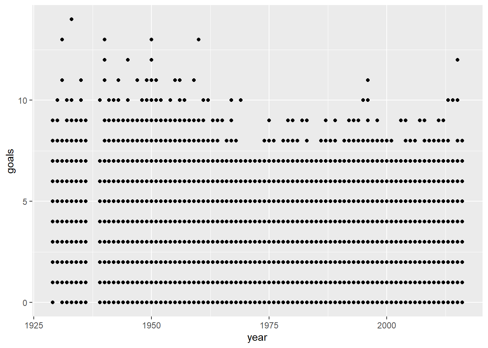
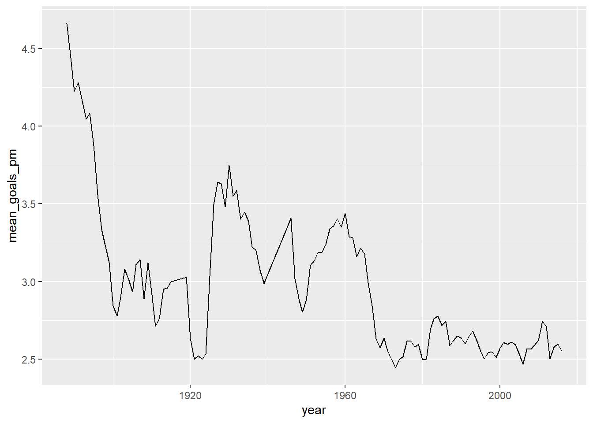
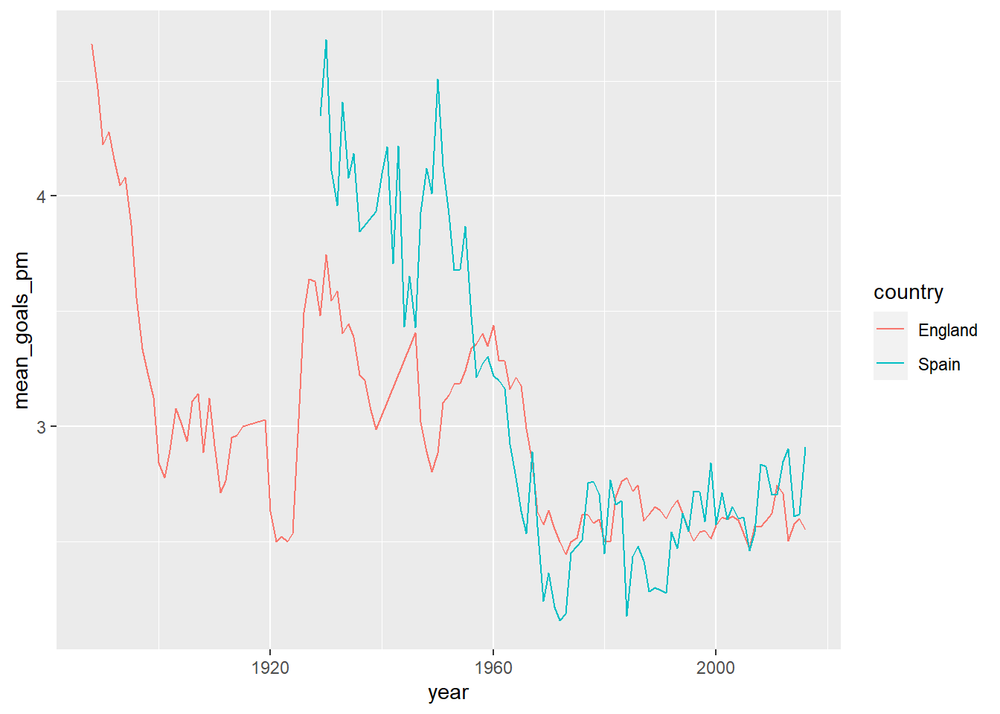
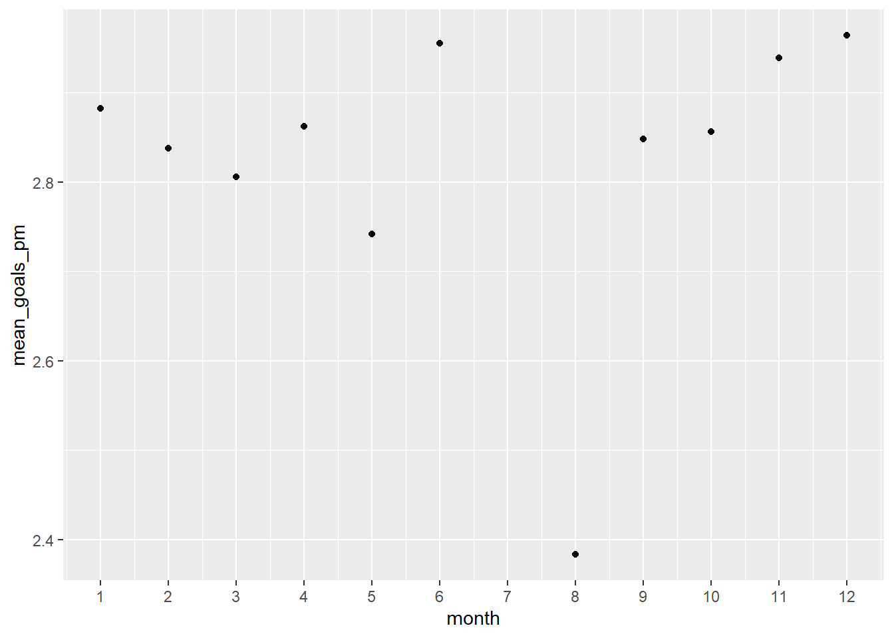
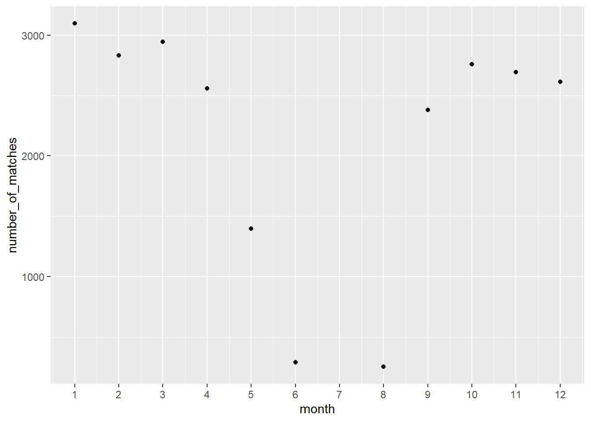
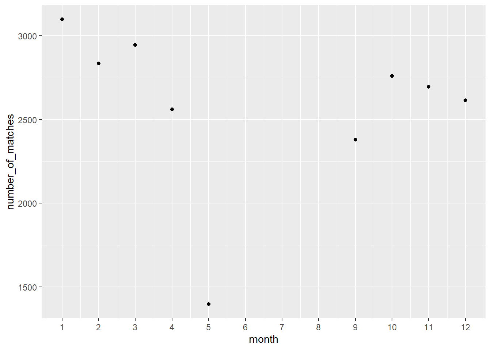
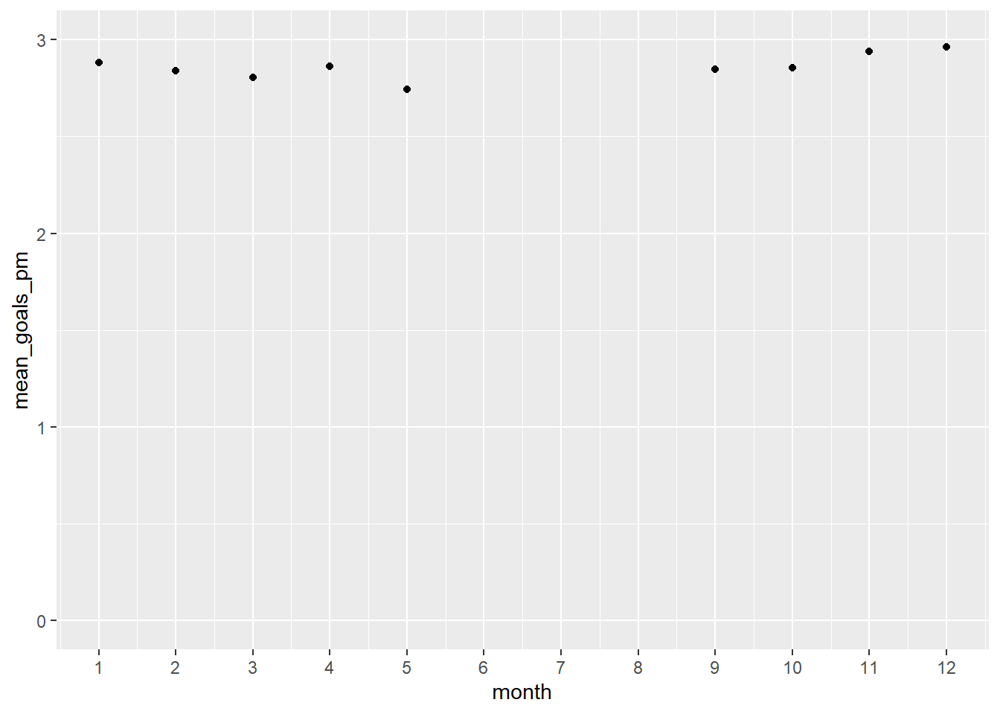
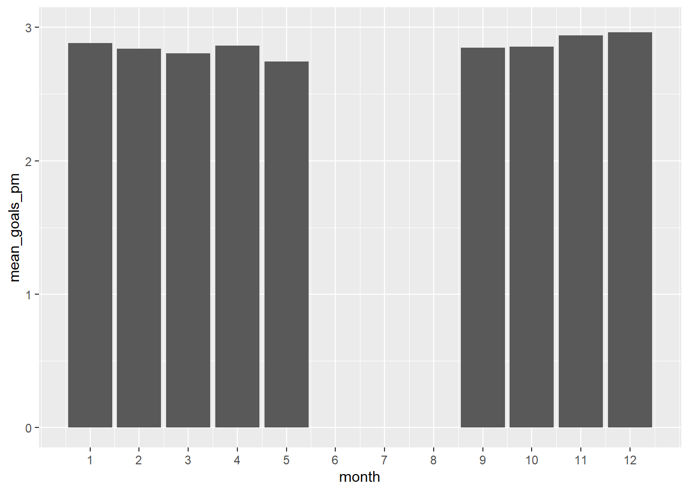

Warning: package 'tidyverse' was built under R version 4.1.3
-- Attaching packages --------------------------------------- tidyverse 1.3.2 --
v ggplot2 3.4.0 v purrr 1.0.1
v tibble 3.1.8 v dplyr 1.1.0
v tidyr 1.3.0 v stringr 1.5.0
v readr 2.1.3 v forcats 1.0.0
Warning: package 'ggplot2' was built under R version 4.1.3
Warning: package 'tibble' was built under R version 4.1.3
Warning: package 'tidyr' was built under R version 4.1.3
Warning: package 'readr' was built under R version 4.1.3
Warning: package 'purrr' was built under R version 4.1.3
Warning: package 'dplyr' was built under R version 4.1.3
Warning: package 'stringr' was built under R version 4.1.3
Warning: package 'forcats' was built under R version 4.1.3
-- Conflicts ------------------------------------------ tidyverse_conflicts() --
x dplyr::filter() masks stats::filter()
x dplyr::lag() masks stats::lag()
library(lubridate)
Warning: package 'lubridate' was built under R version 4.1.3
Attaching package: 'lubridate'
The following objects are masked from 'package:base':
date, intersect, setdiff, union
library(engsoccerdata)
Warning: package 'engsoccerdata' was built under R version 4.1.3
engsoccerdata is a package that includes data. Let us fist see what data are included (list the data in this package).
data(package="engsoccerdata")
If you like sports data, checkout for free datasets
4.3 Exploration
What type of dataset is spain? I hope a data.frame.
spain %>%class()
[1] "data.frame"
Great, it is a data.frame
What are the names of the variables. I hope they are self-explanatory.
Date home visitor FT
1 1929-02-10 Arenas de Getxo Atletico Madrid 2-3
2 1929-02-10 Espanyol Barcelona Real Union 3-2
3 1929-02-10 Real Madrid CE Europa 5-0
4 1929-02-10 Real Sociedad Athletic Bilbao 1-1
5 1929-02-12 Racing Santander FC Barcelona 0-2
6 1929-02-17 FC Barcelona Real Madrid 1-2
7 1929-02-17 Athletic Bilbao Espanyol Barcelona 9-0
8 1929-02-17 Atletico Madrid Real Sociedad 0-3
9 1929-02-17 Real Union Racing Santander 3-1
10 1929-02-17 CE Europa Arenas de Getxo 5-2
Let us look at frequencies of some variables.
How many teams?
spain %>%count(home)
home n
1 AD Almeria 34
2 Albacete 135
3 Arenas de Getxo 65
4 Athletic Bilbao 1362
5 Atletico Madrid 1288
6 Atletico Tetuan 15
7 Burgos CF 102
8 CA Osasuna 639
9 CD Alaves 171
10 CD Alcoyano 54
11 CD Castellon 167
12 CD Condal 15
13 CD Leonesa 15
14 CD Logrones 173
15 CD Malaga 323
16 CD Numancia 76
17 CD Tenerife 247
18 CE Europa 27
19 CE Sabadell 213
20 CF Extremadura 40
21 CP Merida 40
22 Cadiz CF 223
23 Celta Vigo 830
24 Cordoba CF 141
25 Deportivo La Coruna 746
26 Elche CF 339
27 Espanyol Barcelona 1294
28 FC Barcelona 1362
29 Getafe CF 228
30 Gimnastic 58
31 Granada CF 352
32 Hercules CF 314
33 Levante UD 201
34 Malaga CF 285
35 Pontevedra CF 90
36 RCD Mallorca 494
37 Racing Santander 713
38 Rayo Vallecano 321
39 Real Betis 845
40 Real Burgos 57
41 Real Jaen 45
42 Real Madrid 1362
43 Real Murcia 293
44 Real Oviedo 596
45 Real Sociedad 1132
46 Real Union 36
47 Real Valladolid 733
48 Real Zaragoza 993
49 Recreativo Huelva 93
50 SD Compostela 80
51 SD Eibar 38
52 Sevilla FC 1185
53 Sporting Gijon 710
54 UD Almeria 114
55 UD Las Palmas 529
56 UD Salamanca 212
57 UE Lleida 34
58 Valencia CF 1313
59 Villarreal CF 304
60 Xerez CD 19
Frequencies of variable-combinations
How many times did team A host team B?
spain %>%count(home, visitor)
home visitor n
1 AD Almeria Athletic Bilbao 2
2 AD Almeria Atletico Madrid 2
3 AD Almeria Burgos CF 1
4 AD Almeria CA Osasuna 1
5 AD Almeria CD Malaga 1
6 AD Almeria Espanyol Barcelona 2
7 AD Almeria FC Barcelona 2
8 AD Almeria Hercules CF 2
9 AD Almeria Rayo Vallecano 1
10 AD Almeria Real Betis 2
11 AD Almeria Real Madrid 2
12 AD Almeria Real Murcia 1
13 AD Almeria Real Sociedad 2
14 AD Almeria Real Valladolid 1
15 AD Almeria Real Zaragoza 2
16 AD Almeria Sevilla FC 2
17 AD Almeria Sporting Gijon 2
18 AD Almeria UD Las Palmas 2
19 AD Almeria UD Salamanca 2
20 AD Almeria Valencia CF 2
21 Albacete Athletic Bilbao 7
22 Albacete Atletico Madrid 7
23 Albacete CA Osasuna 5
24 Albacete CD Logrones 4
25 Albacete CD Numancia 1
26 Albacete CD Tenerife 5
27 Albacete CP Merida 1
28 Albacete Cadiz CF 2
29 Albacete Celta Vigo 5
30 Albacete Deportivo La Coruna 7
31 Albacete Espanyol Barcelona 6
32 Albacete FC Barcelona 7
33 Albacete Getafe CF 1
34 Albacete Levante UD 1
35 Albacete Malaga CF 2
36 Albacete RCD Mallorca 3
37 Albacete Racing Santander 5
38 Albacete Rayo Vallecano 3
39 Albacete Real Betis 4
40 Albacete Real Burgos 2
41 Albacete Real Madrid 7
42 Albacete Real Murcia 1
43 Albacete Real Oviedo 5
44 Albacete Real Sociedad 7
45 Albacete Real Valladolid 5
46 Albacete Real Zaragoza 7
47 Albacete SD Compostela 2
48 Albacete Sevilla FC 7
49 Albacete Sporting Gijon 5
50 Albacete UD Salamanca 1
51 Albacete UE Lleida 1
52 Albacete Valencia CF 7
53 Albacete Villarreal CF 2
54 Arenas de Getxo Athletic Bilbao 7
55 Arenas de Getxo Atletico Madrid 3
56 Arenas de Getxo CD Alaves 3
57 Arenas de Getxo CE Europa 3
58 Arenas de Getxo Espanyol Barcelona 7
59 Arenas de Getxo FC Barcelona 7
60 Arenas de Getxo Racing Santander 7
61 Arenas de Getxo Real Betis 3
62 Arenas de Getxo Real Madrid 7
63 Arenas de Getxo Real Oviedo 2
64 Arenas de Getxo Real Sociedad 7
65 Arenas de Getxo Real Union 4
66 Arenas de Getxo Sevilla FC 1
67 Arenas de Getxo Valencia CF 4
68 Athletic Bilbao AD Almeria 2
69 Athletic Bilbao Albacete 7
70 Athletic Bilbao Arenas de Getxo 7
71 Athletic Bilbao Atletico Madrid 79
72 Athletic Bilbao Atletico Tetuan 1
73 Athletic Bilbao Burgos CF 6
74 Athletic Bilbao CA Osasuna 37
75 Athletic Bilbao CD Alaves 11
76 Athletic Bilbao CD Alcoyano 4
77 Athletic Bilbao CD Castellon 11
78 Athletic Bilbao CD Condal 1
79 Athletic Bilbao CD Leonesa 1
80 Athletic Bilbao CD Logrones 9
81 Athletic Bilbao CD Malaga 20
82 Athletic Bilbao CD Numancia 4
83 Athletic Bilbao CD Tenerife 13
84 Athletic Bilbao CE Europa 3
85 Athletic Bilbao CE Sabadell 15
86 Athletic Bilbao CF Extremadura 2
87 Athletic Bilbao CP Merida 2
88 Athletic Bilbao Cadiz CF 13
89 Athletic Bilbao Celta Vigo 50
90 Athletic Bilbao Cordoba CF 9
91 Athletic Bilbao Deportivo La Coruna 44
92 Athletic Bilbao Elche CF 21
93 Athletic Bilbao Espanyol Barcelona 81
94 Athletic Bilbao FC Barcelona 85
95 Athletic Bilbao Getafe CF 12
96 Athletic Bilbao Gimnastic 4
97 Athletic Bilbao Granada CF 22
98 Athletic Bilbao Hercules CF 20
99 Athletic Bilbao Levante UD 11
100 Athletic Bilbao Malaga CF 15
101 Athletic Bilbao Pontevedra CF 6
102 Athletic Bilbao RCD Mallorca 27
103 Athletic Bilbao Racing Santander 45
104 Athletic Bilbao Rayo Vallecano 17
105 Athletic Bilbao Real Betis 50
106 Athletic Bilbao Real Burgos 3
107 Athletic Bilbao Real Jaen 3
108 Athletic Bilbao Real Madrid 85
109 Athletic Bilbao Real Murcia 18
110 Athletic Bilbao Real Oviedo 38
111 Athletic Bilbao Real Sociedad 69
112 Athletic Bilbao Real Union 4
113 Athletic Bilbao Real Valladolid 42
114 Athletic Bilbao Real Zaragoza 58
115 Athletic Bilbao Recreativo Huelva 5
116 Athletic Bilbao SD Compostela 4
117 Athletic Bilbao SD Eibar 2
118 Athletic Bilbao Sevilla FC 72
119 Athletic Bilbao Sporting Gijon 41
120 Athletic Bilbao UD Almeria 6
121 Athletic Bilbao UD Las Palmas 33
122 Athletic Bilbao UD Salamanca 12
123 Athletic Bilbao UE Lleida 2
124 Athletic Bilbao Valencia CF 81
125 Athletic Bilbao Villarreal CF 16
126 Athletic Bilbao Xerez CD 1
127 Atletico Madrid AD Almeria 2
128 Atletico Madrid Albacete 7
129 Atletico Madrid Arenas de Getxo 3
130 Atletico Madrid Athletic Bilbao 79
131 Atletico Madrid Atletico Tetuan 1
132 Atletico Madrid Burgos CF 6
133 Atletico Madrid CA Osasuna 34
134 Atletico Madrid CD Alaves 6
135 Atletico Madrid CD Alcoyano 4
136 Atletico Madrid CD Castellon 11
137 Atletico Madrid CD Condal 1
138 Atletico Madrid CD Leonesa 1
139 Atletico Madrid CD Logrones 9
140 Atletico Madrid CD Malaga 20
141 Atletico Madrid CD Numancia 3
142 Atletico Madrid CD Tenerife 12
143 Atletico Madrid CE Europa 2
144 Atletico Madrid CE Sabadell 14
145 Atletico Madrid CF Extremadura 2
146 Atletico Madrid CP Merida 2
147 Atletico Madrid Cadiz CF 12
148 Atletico Madrid Celta Vigo 48
149 Atletico Madrid Cordoba CF 9
150 Atletico Madrid Deportivo La Coruna 42
151 Atletico Madrid Elche CF 21
152 Atletico Madrid Espanyol Barcelona 75
153 Atletico Madrid FC Barcelona 79
154 Atletico Madrid Getafe CF 12
155 Atletico Madrid Gimnastic 4
156 Atletico Madrid Granada CF 22
157 Atletico Madrid Hercules CF 20
158 Atletico Madrid Levante UD 11
159 Atletico Madrid Malaga CF 13
160 Atletico Madrid Pontevedra CF 6
161 Atletico Madrid RCD Mallorca 25
162 Atletico Madrid Racing Santander 39
163 Atletico Madrid Rayo Vallecano 15
164 Atletico Madrid Real Betis 48
165 Atletico Madrid Real Burgos 3
166 Atletico Madrid Real Jaen 3
167 Atletico Madrid Real Madrid 79
168 Atletico Madrid Real Murcia 19
169 Atletico Madrid Real Oviedo 36
170 Atletico Madrid Real Sociedad 64
171 Atletico Madrid Real Union 2
172 Atletico Madrid Real Valladolid 41
173 Atletico Madrid Real Zaragoza 56
174 Atletico Madrid Recreativo Huelva 5
175 Atletico Madrid SD Compostela 4
176 Atletico Madrid SD Eibar 2
177 Atletico Madrid Sevilla FC 72
178 Atletico Madrid Sporting Gijon 41
179 Atletico Madrid UD Almeria 6
180 Atletico Madrid UD Las Palmas 30
181 Atletico Madrid UD Salamanca 12
182 Atletico Madrid UE Lleida 2
183 Atletico Madrid Valencia CF 76
184 Atletico Madrid Villarreal CF 14
185 Atletico Madrid Xerez CD 1
186 Atletico Tetuan Athletic Bilbao 1
187 Atletico Tetuan Atletico Madrid 1
188 Atletico Tetuan Celta Vigo 1
189 Atletico Tetuan Deportivo La Coruna 1
190 Atletico Tetuan Espanyol Barcelona 1
191 Atletico Tetuan FC Barcelona 1
192 Atletico Tetuan Racing Santander 1
193 Atletico Tetuan Real Madrid 1
194 Atletico Tetuan Real Sociedad 1
195 Atletico Tetuan Real Valladolid 1
196 Atletico Tetuan Real Zaragoza 1
197 Atletico Tetuan Sevilla FC 1
198 Atletico Tetuan Sporting Gijon 1
199 Atletico Tetuan UD Las Palmas 1
200 Atletico Tetuan Valencia CF 1
201 Burgos CF AD Almeria 1
202 Burgos CF Athletic Bilbao 6
203 Burgos CF Atletico Madrid 6
204 Burgos CF CD Castellon 1
205 Burgos CF CD Malaga 4
206 Burgos CF CE Sabadell 1
207 Burgos CF Cadiz CF 1
208 Burgos CF Celta Vigo 4
209 Burgos CF Cordoba CF 1
210 Burgos CF Deportivo La Coruna 2
211 Burgos CF Elche CF 2
212 Burgos CF Espanyol Barcelona 6
213 Burgos CF FC Barcelona 6
214 Burgos CF Granada CF 2
215 Burgos CF Hercules CF 4
216 Burgos CF Racing Santander 3
217 Burgos CF Rayo Vallecano 3
218 Burgos CF Real Betis 5
219 Burgos CF Real Madrid 6
220 Burgos CF Real Oviedo 1
221 Burgos CF Real Sociedad 6
222 Burgos CF Real Zaragoza 4
223 Burgos CF Recreativo Huelva 1
224 Burgos CF Sevilla FC 5
225 Burgos CF Sporting Gijon 5
226 Burgos CF UD Las Palmas 6
227 Burgos CF UD Salamanca 4
228 Burgos CF Valencia CF 6
229 CA Osasuna AD Almeria 1
230 CA Osasuna Albacete 5
231 CA Osasuna Athletic Bilbao 37
232 CA Osasuna Atletico Madrid 34
233 CA Osasuna CD Alaves 4
234 CA Osasuna CD Castellon 3
235 CA Osasuna CD Condal 1
236 CA Osasuna CD Logrones 7
237 CA Osasuna CD Malaga 6
238 CA Osasuna CD Numancia 3
239 CA Osasuna CD Tenerife 8
240 CA Osasuna CE Sabadell 3
241 CA Osasuna Cadiz CF 12
242 CA Osasuna Celta Vigo 19
243 CA Osasuna Cordoba CF 1
244 CA Osasuna Deportivo La Coruna 18
245 CA Osasuna Elche CF 6
246 CA Osasuna Espanyol Barcelona 33
247 CA Osasuna FC Barcelona 36
248 CA Osasuna Getafe CF 10
249 CA Osasuna Gimnastic 1
250 CA Osasuna Granada CF 6
251 CA Osasuna Hercules CF 6
252 CA Osasuna Levante UD 7
253 CA Osasuna Malaga CF 12
254 CA Osasuna RCD Mallorca 21
255 CA Osasuna Racing Santander 21
256 CA Osasuna Rayo Vallecano 9
257 CA Osasuna Real Betis 26
258 CA Osasuna Real Burgos 3
259 CA Osasuna Real Jaen 3
260 CA Osasuna Real Madrid 36
261 CA Osasuna Real Murcia 8
262 CA Osasuna Real Oviedo 13
263 CA Osasuna Real Sociedad 31
264 CA Osasuna Real Valladolid 27
265 CA Osasuna Real Zaragoza 31
266 CA Osasuna Recreativo Huelva 4
267 CA Osasuna Sevilla FC 35
268 CA Osasuna Sporting Gijon 21
269 CA Osasuna UD Almeria 5
270 CA Osasuna UD Las Palmas 13
271 CA Osasuna UD Salamanca 3
272 CA Osasuna UE Lleida 1
273 CA Osasuna Valencia CF 35
274 CA Osasuna Villarreal CF 13
275 CA Osasuna Xerez CD 1
276 CD Alaves Arenas de Getxo 3
277 CD Alaves Athletic Bilbao 11
278 CD Alaves Atletico Madrid 6
279 CD Alaves CA Osasuna 4
280 CD Alaves CD Leonesa 1
281 CD Alaves CD Malaga 1
282 CD Alaves CD Numancia 2
283 CD Alaves CD Tenerife 2
284 CD Alaves CE Europa 1
285 CD Alaves CF Extremadura 1
286 CD Alaves Cadiz CF 1
287 CD Alaves Celta Vigo 8
288 CD Alaves Deportivo La Coruna 8
289 CD Alaves Espanyol Barcelona 11
290 CD Alaves FC Barcelona 11
291 CD Alaves Getafe CF 1
292 CD Alaves Hercules CF 2
293 CD Alaves Malaga CF 5
294 CD Alaves RCD Mallorca 6
295 CD Alaves Racing Santander 9
296 CD Alaves Rayo Vallecano 4
297 CD Alaves Real Betis 6
298 CD Alaves Real Madrid 11
299 CD Alaves Real Murcia 1
300 CD Alaves Real Oviedo 3
301 CD Alaves Real Sociedad 11
302 CD Alaves Real Union 2
303 CD Alaves Real Valladolid 7
304 CD Alaves Real Zaragoza 5
305 CD Alaves Recreativo Huelva 1
306 CD Alaves Sevilla FC 6
307 CD Alaves UD Las Palmas 4
308 CD Alaves UD Salamanca 1
309 CD Alaves Valencia CF 10
310 CD Alaves Villarreal CF 5
311 CD Alcoyano Athletic Bilbao 4
312 CD Alcoyano Atletico Madrid 4
313 CD Alcoyano CD Castellon 1
314 CD Alcoyano CD Malaga 1
315 CD Alcoyano CE Sabadell 2
316 CD Alcoyano Celta Vigo 4
317 CD Alcoyano Deportivo La Coruna 2
318 CD Alcoyano Espanyol Barcelona 4
319 CD Alcoyano FC Barcelona 4
320 CD Alcoyano Gimnastic 2
321 CD Alcoyano Hercules CF 1
322 CD Alcoyano Racing Santander 1
323 CD Alcoyano Real Madrid 4
324 CD Alcoyano Real Murcia 2
325 CD Alcoyano Real Oviedo 3
326 CD Alcoyano Real Sociedad 2
327 CD Alcoyano Real Valladolid 2
328 CD Alcoyano Sevilla FC 4
329 CD Alcoyano Sporting Gijon 2
330 CD Alcoyano UE Lleida 1
331 CD Alcoyano Valencia CF 4
332 CD Castellon Athletic Bilbao 11
333 CD Castellon Atletico Madrid 11
334 CD Castellon Burgos CF 1
335 CD Castellon CA Osasuna 3
336 CD Castellon CD Alcoyano 1
337 CD Castellon CD Logrones 2
338 CD Castellon CD Malaga 3
339 CD Castellon CD Tenerife 2
340 CD Castellon CE Sabadell 3
341 CD Castellon Cadiz CF 3
342 CD Castellon Celta Vigo 8
343 CD Castellon Deportivo La Coruna 6
344 CD Castellon Elche CF 1
345 CD Castellon Espanyol Barcelona 10
346 CD Castellon FC Barcelona 11
347 CD Castellon Granada CF 6
348 CD Castellon Hercules CF 3
349 CD Castellon RCD Mallorca 2
350 CD Castellon Racing Santander 2
351 CD Castellon Rayo Vallecano 1
352 CD Castellon Real Betis 4
353 CD Castellon Real Burgos 1
354 CD Castellon Real Madrid 11
355 CD Castellon Real Murcia 4
356 CD Castellon Real Oviedo 10
357 CD Castellon Real Sociedad 7
358 CD Castellon Real Valladolid 3
359 CD Castellon Real Zaragoza 6
360 CD Castellon Sevilla FC 9
361 CD Castellon Sporting Gijon 8
362 CD Castellon UD Las Palmas 3
363 CD Castellon Valencia CF 11
364 CD Condal Athletic Bilbao 1
365 CD Condal Atletico Madrid 1
366 CD Condal CA Osasuna 1
367 CD Condal Celta Vigo 1
368 CD Condal Deportivo La Coruna 1
369 CD Condal Espanyol Barcelona 1
370 CD Condal FC Barcelona 1
371 CD Condal Real Jaen 1
372 CD Condal Real Madrid 1
373 CD Condal Real Sociedad 1
374 CD Condal Real Valladolid 1
375 CD Condal Real Zaragoza 1
376 CD Condal Sevilla FC 1
377 CD Condal UD Las Palmas 1
378 CD Condal Valencia CF 1
379 CD Leonesa Athletic Bilbao 1
380 CD Leonesa Atletico Madrid 1
381 CD Leonesa CD Alaves 1
382 CD Leonesa Celta Vigo 1
383 CD Leonesa Deportivo La Coruna 1
384 CD Leonesa Espanyol Barcelona 1
385 CD Leonesa FC Barcelona 1
386 CD Leonesa Hercules CF 1
387 CD Leonesa Real Madrid 1
388 CD Leonesa Real Murcia 1
389 CD Leonesa Real Sociedad 1
390 CD Leonesa Real Valladolid 1
391 CD Leonesa Sevilla FC 1
392 CD Leonesa UD Las Palmas 1
393 CD Leonesa Valencia CF 1
394 CD Logrones Albacete 4
395 CD Logrones Athletic Bilbao 9
396 CD Logrones Atletico Madrid 9
397 CD Logrones CA Osasuna 7
398 CD Logrones CD Castellon 2
399 CD Logrones CD Malaga 2
400 CD Logrones CD Tenerife 7
401 CD Logrones CE Sabadell 1
402 CD Logrones CF Extremadura 1
403 CD Logrones Cadiz CF 6
404 CD Logrones Celta Vigo 7
405 CD Logrones Deportivo La Coruna 5
406 CD Logrones Elche CF 1
407 CD Logrones Espanyol Barcelona 7
408 CD Logrones FC Barcelona 9
409 CD Logrones Hercules CF 1
410 CD Logrones RCD Mallorca 4
411 CD Logrones Racing Santander 3
412 CD Logrones Rayo Vallecano 4
413 CD Logrones Real Betis 5
414 CD Logrones Real Burgos 3
415 CD Logrones Real Madrid 9
416 CD Logrones Real Murcia 2
417 CD Logrones Real Oviedo 8
418 CD Logrones Real Sociedad 9
419 CD Logrones Real Valladolid 8
420 CD Logrones Real Zaragoza 9
421 CD Logrones SD Compostela 2
422 CD Logrones Sevilla FC 9
423 CD Logrones Sporting Gijon 9
424 CD Logrones UD Las Palmas 1
425 CD Logrones UE Lleida 1
426 CD Logrones Valencia CF 9
427 CD Malaga AD Almeria 1
428 CD Malaga Athletic Bilbao 20
429 CD Malaga Atletico Madrid 20
430 CD Malaga Burgos CF 4
431 CD Malaga CA Osasuna 6
432 CD Malaga CD Alaves 1
433 CD Malaga CD Alcoyano 1
434 CD Malaga CD Castellon 3
435 CD Malaga CD Logrones 2
436 CD Malaga CD Tenerife 1
437 CD Malaga CE Sabadell 5
438 CD Malaga Cadiz CF 3
439 CD Malaga Celta Vigo 13
440 CD Malaga Cordoba CF 5
441 CD Malaga Deportivo La Coruna 8
442 CD Malaga Elche CF 10
443 CD Malaga Espanyol Barcelona 18
444 CD Malaga FC Barcelona 20
445 CD Malaga Gimnastic 1
446 CD Malaga Granada CF 6
447 CD Malaga Hercules CF 5
448 CD Malaga Pontevedra CF 3
449 CD Malaga RCD Mallorca 4
450 CD Malaga Racing Santander 7
451 CD Malaga Rayo Vallecano 2
452 CD Malaga Real Betis 12
453 CD Malaga Real Madrid 20
454 CD Malaga Real Murcia 6
455 CD Malaga Real Oviedo 7
456 CD Malaga Real Sociedad 18
457 CD Malaga Real Valladolid 10
458 CD Malaga Real Zaragoza 16
459 CD Malaga Sevilla FC 16
460 CD Malaga Sporting Gijon 12
461 CD Malaga UD Las Palmas 12
462 CD Malaga UD Salamanca 4
463 CD Malaga UE Lleida 1
464 CD Malaga Valencia CF 20
465 CD Numancia Albacete 1
466 CD Numancia Athletic Bilbao 4
467 CD Numancia Atletico Madrid 3
468 CD Numancia CA Osasuna 3
469 CD Numancia CD Alaves 2
470 CD Numancia Celta Vigo 2
471 CD Numancia Deportivo La Coruna 4
472 CD Numancia Espanyol Barcelona 4
473 CD Numancia FC Barcelona 4
474 CD Numancia Getafe CF 2
475 CD Numancia Levante UD 1
476 CD Numancia Malaga CF 4
477 CD Numancia RCD Mallorca 4
478 CD Numancia Racing Santander 4
479 CD Numancia Rayo Vallecano 2
480 CD Numancia Real Betis 3
481 CD Numancia Real Madrid 4
482 CD Numancia Real Oviedo 2
483 CD Numancia Real Sociedad 3
484 CD Numancia Real Valladolid 3
485 CD Numancia Real Zaragoza 3
486 CD Numancia Recreativo Huelva 1
487 CD Numancia Sevilla FC 3
488 CD Numancia Sporting Gijon 1
489 CD Numancia UD Almeria 1
490 CD Numancia UD Las Palmas 1
491 CD Numancia Valencia CF 4
492 CD Numancia Villarreal CF 3
493 CD Tenerife Albacete 5
494 CD Tenerife Athletic Bilbao 13
495 CD Tenerife Atletico Madrid 12
496 CD Tenerife CA Osasuna 8
497 CD Tenerife CD Alaves 2
498 CD Tenerife CD Castellon 2
499 CD Tenerife CD Logrones 7
500 CD Tenerife CD Malaga 1
501 CD Tenerife CF Extremadura 2
502 CD Tenerife CP Merida 2
503 CD Tenerife Cadiz CF 4
504 CD Tenerife Celta Vigo 9
505 CD Tenerife Deportivo La Coruna 10
506 CD Tenerife Elche CF 1
507 CD Tenerife Espanyol Barcelona 11
508 CD Tenerife FC Barcelona 13
509 CD Tenerife Getafe CF 1
510 CD Tenerife Hercules CF 1
511 CD Tenerife Malaga CF 2
512 CD Tenerife RCD Mallorca 8
513 CD Tenerife Racing Santander 8
514 CD Tenerife Rayo Vallecano 6
515 CD Tenerife Real Betis 8
516 CD Tenerife Real Burgos 3
517 CD Tenerife Real Madrid 13
518 CD Tenerife Real Oviedo 11
519 CD Tenerife Real Sociedad 12
520 CD Tenerife Real Valladolid 11
521 CD Tenerife Real Zaragoza 13
522 CD Tenerife SD Compostela 4
523 CD Tenerife Sevilla FC 11
524 CD Tenerife Sporting Gijon 10
525 CD Tenerife UD Almeria 1
526 CD Tenerife UD Las Palmas 1
527 CD Tenerife UD Salamanca 3
528 CD Tenerife UE Lleida 1
529 CD Tenerife Valencia CF 13
530 CD Tenerife Villarreal CF 3
531 CD Tenerife Xerez CD 1
532 CE Europa Arenas de Getxo 3
533 CE Europa Athletic Bilbao 3
534 CE Europa Atletico Madrid 2
535 CE Europa CD Alaves 1
536 CE Europa Espanyol Barcelona 3
537 CE Europa FC Barcelona 3
538 CE Europa Racing Santander 3
539 CE Europa Real Madrid 3
540 CE Europa Real Sociedad 3
541 CE Europa Real Union 3
542 CE Sabadell Athletic Bilbao 15
543 CE Sabadell Atletico Madrid 14
544 CE Sabadell Burgos CF 1
545 CE Sabadell CA Osasuna 3
546 CE Sabadell CD Alcoyano 2
547 CE Sabadell CD Castellon 3
548 CE Sabadell CD Logrones 1
549 CE Sabadell CD Malaga 5
550 CE Sabadell Cadiz CF 3
551 CE Sabadell Celta Vigo 8
552 CE Sabadell Cordoba CF 5
553 CE Sabadell Deportivo La Coruna 8
554 CE Sabadell Elche CF 6
555 CE Sabadell Espanyol Barcelona 13
556 CE Sabadell FC Barcelona 14
557 CE Sabadell Gimnastic 2
558 CE Sabadell Granada CF 7
559 CE Sabadell Hercules CF 1
560 CE Sabadell Pontevedra CF 5
561 CE Sabadell RCD Mallorca 4
562 CE Sabadell Racing Santander 2
563 CE Sabadell Real Betis 5
564 CE Sabadell Real Madrid 14
565 CE Sabadell Real Murcia 4
566 CE Sabadell Real Oviedo 5
567 CE Sabadell Real Sociedad 9
568 CE Sabadell Real Valladolid 3
569 CE Sabadell Real Zaragoza 8
570 CE Sabadell Sevilla FC 13
571 CE Sabadell Sporting Gijon 7
572 CE Sabadell UD Las Palmas 10
573 CE Sabadell Valencia CF 13
574 CF Extremadura Athletic Bilbao 2
575 CF Extremadura Atletico Madrid 2
576 CF Extremadura CD Alaves 1
577 CF Extremadura CD Logrones 1
578 CF Extremadura CD Tenerife 2
579 CF Extremadura Celta Vigo 2
580 CF Extremadura Deportivo La Coruna 2
581 CF Extremadura Espanyol Barcelona 2
582 CF Extremadura FC Barcelona 2
583 CF Extremadura Hercules CF 1
584 CF Extremadura RCD Mallorca 1
585 CF Extremadura Racing Santander 2
586 CF Extremadura Rayo Vallecano 1
587 CF Extremadura Real Betis 2
588 CF Extremadura Real Madrid 2
589 CF Extremadura Real Oviedo 2
590 CF Extremadura Real Sociedad 2
591 CF Extremadura Real Valladolid 2
592 CF Extremadura Real Zaragoza 2
593 CF Extremadura SD Compostela 1
594 CF Extremadura Sevilla FC 1
595 CF Extremadura Sporting Gijon 1
596 CF Extremadura UD Salamanca 1
597 CF Extremadura Valencia CF 2
598 CF Extremadura Villarreal CF 1
599 CP Merida Albacete 1
600 CP Merida Athletic Bilbao 2
601 CP Merida Atletico Madrid 2
602 CP Merida CD Tenerife 2
603 CP Merida Celta Vigo 2
604 CP Merida Deportivo La Coruna 2
605 CP Merida Espanyol Barcelona 2
606 CP Merida FC Barcelona 2
607 CP Merida RCD Mallorca 1
608 CP Merida Racing Santander 2
609 CP Merida Rayo Vallecano 1
610 CP Merida Real Betis 2
611 CP Merida Real Madrid 2
612 CP Merida Real Oviedo 2
613 CP Merida Real Sociedad 2
614 CP Merida Real Valladolid 2
615 CP Merida Real Zaragoza 2
616 CP Merida SD Compostela 2
617 CP Merida Sevilla FC 1
618 CP Merida Sporting Gijon 2
619 CP Merida UD Salamanca 2
620 CP Merida Valencia CF 2
621 Cadiz CF Albacete 2
622 Cadiz CF Athletic Bilbao 13
623 Cadiz CF Atletico Madrid 12
624 Cadiz CF Burgos CF 1
625 Cadiz CF CA Osasuna 12
626 Cadiz CF CD Alaves 1
627 Cadiz CF CD Castellon 3
628 Cadiz CF CD Logrones 6
629 Cadiz CF CD Malaga 3
630 Cadiz CF CD Tenerife 4
631 Cadiz CF CE Sabadell 3
632 Cadiz CF Celta Vigo 6
633 Cadiz CF Deportivo La Coruna 3
634 Cadiz CF Elche CF 2
635 Cadiz CF Espanyol Barcelona 11
636 Cadiz CF FC Barcelona 12
637 Cadiz CF Getafe CF 1
638 Cadiz CF Hercules CF 3
639 Cadiz CF Malaga CF 1
640 Cadiz CF RCD Mallorca 7
641 Cadiz CF Racing Santander 6
642 Cadiz CF Rayo Vallecano 3
643 Cadiz CF Real Betis 9
644 Cadiz CF Real Burgos 3
645 Cadiz CF Real Madrid 12
646 Cadiz CF Real Murcia 4
647 Cadiz CF Real Oviedo 5
648 Cadiz CF Real Sociedad 12
649 Cadiz CF Real Valladolid 9
650 Cadiz CF Real Zaragoza 11
651 Cadiz CF Sevilla FC 12
652 Cadiz CF Sporting Gijon 11
653 Cadiz CF UD Las Palmas 6
654 Cadiz CF UD Salamanca 2
655 Cadiz CF Valencia CF 11
656 Cadiz CF Villarreal CF 1
657 Celta Vigo Albacete 5
658 Celta Vigo Athletic Bilbao 50
659 Celta Vigo Atletico Madrid 48
660 Celta Vigo Atletico Tetuan 1
661 Celta Vigo Burgos CF 4
662 Celta Vigo CA Osasuna 19
663 Celta Vigo CD Alaves 8
664 Celta Vigo CD Alcoyano 4
665 Celta Vigo CD Castellon 8
666 Celta Vigo CD Condal 1
667 Celta Vigo CD Leonesa 1
668 Celta Vigo CD Logrones 7
669 Celta Vigo CD Malaga 13
670 Celta Vigo CD Numancia 2
671 Celta Vigo CD Tenerife 9
672 Celta Vigo CE Sabadell 8
673 Celta Vigo CF Extremadura 2
674 Celta Vigo CP Merida 2
675 Celta Vigo Cadiz CF 6
676 Celta Vigo Cordoba CF 2
677 Celta Vigo Deportivo La Coruna 33
678 Celta Vigo Elche CF 8
679 Celta Vigo Espanyol Barcelona 47
680 Celta Vigo FC Barcelona 50
681 Celta Vigo Getafe CF 6
682 Celta Vigo Gimnastic 4
683 Celta Vigo Granada CF 15
684 Celta Vigo Hercules CF 11
685 Celta Vigo Levante UD 5
686 Celta Vigo Malaga CF 10
687 Celta Vigo Pontevedra CF 1
688 Celta Vigo RCD Mallorca 13
689 Celta Vigo Racing Santander 23
690 Celta Vigo Rayo Vallecano 14
691 Celta Vigo Real Betis 25
692 Celta Vigo Real Burgos 1
693 Celta Vigo Real Jaen 3
694 Celta Vigo Real Madrid 50
695 Celta Vigo Real Murcia 10
696 Celta Vigo Real Oviedo 25
697 Celta Vigo Real Sociedad 44
698 Celta Vigo Real Valladolid 28
699 Celta Vigo Real Zaragoza 34
700 Celta Vigo Recreativo Huelva 3
701 Celta Vigo SD Compostela 4
702 Celta Vigo SD Eibar 2
703 Celta Vigo Sevilla FC 44
704 Celta Vigo Sporting Gijon 26
705 Celta Vigo UD Almeria 2
706 Celta Vigo UD Las Palmas 20
707 Celta Vigo UD Salamanca 7
708 Celta Vigo UE Lleida 2
709 Celta Vigo Valencia CF 50
710 Celta Vigo Villarreal CF 10
711 Cordoba CF Athletic Bilbao 9
712 Cordoba CF Atletico Madrid 9
713 Cordoba CF Burgos CF 1
714 Cordoba CF CA Osasuna 1
715 Cordoba CF CD Malaga 5
716 Cordoba CF CE Sabadell 5
717 Cordoba CF Celta Vigo 2
718 Cordoba CF Deportivo La Coruna 6
719 Cordoba CF Elche CF 8
720 Cordoba CF Espanyol Barcelona 8
721 Cordoba CF FC Barcelona 9
722 Cordoba CF Getafe CF 1
723 Cordoba CF Granada CF 4
724 Cordoba CF Hercules CF 1
725 Cordoba CF Levante UD 3
726 Cordoba CF Malaga CF 1
727 Cordoba CF Pontevedra CF 5
728 Cordoba CF RCD Mallorca 2
729 Cordoba CF Rayo Vallecano 1
730 Cordoba CF Real Betis 6
731 Cordoba CF Real Madrid 9
732 Cordoba CF Real Murcia 2
733 Cordoba CF Real Oviedo 3
734 Cordoba CF Real Sociedad 4
735 Cordoba CF Real Valladolid 2
736 Cordoba CF Real Zaragoza 7
737 Cordoba CF SD Eibar 1
738 Cordoba CF Sevilla FC 8
739 Cordoba CF Sporting Gijon 1
740 Cordoba CF UD Almeria 1
741 Cordoba CF UD Las Palmas 6
742 Cordoba CF Valencia CF 9
743 Cordoba CF Villarreal CF 1
744 Deportivo La Coruna Albacete 7
745 Deportivo La Coruna Athletic Bilbao 44
746 Deportivo La Coruna Atletico Madrid 42
747 Deportivo La Coruna Atletico Tetuan 1
748 Deportivo La Coruna Burgos CF 2
749 Deportivo La Coruna CA Osasuna 18
750 Deportivo La Coruna CD Alaves 8
751 Deportivo La Coruna CD Alcoyano 2
752 Deportivo La Coruna CD Castellon 6
753 Deportivo La Coruna CD Condal 1
754 Deportivo La Coruna CD Leonesa 1
755 Deportivo La Coruna CD Logrones 5
756 Deportivo La Coruna CD Malaga 8
757 Deportivo La Coruna CD Numancia 4
758 Deportivo La Coruna CD Tenerife 10
759 Deportivo La Coruna CE Sabadell 8
760 Deportivo La Coruna CF Extremadura 2
761 Deportivo La Coruna CP Merida 2
762 Deportivo La Coruna Cadiz CF 3
763 Deportivo La Coruna Celta Vigo 33
764 Deportivo La Coruna Cordoba CF 6
765 Deportivo La Coruna Elche CF 6
766 Deportivo La Coruna Espanyol Barcelona 41
767 Deportivo La Coruna FC Barcelona 44
768 Deportivo La Coruna Getafe CF 10
769 Deportivo La Coruna Gimnastic 3
770 Deportivo La Coruna Granada CF 12
771 Deportivo La Coruna Hercules CF 6
772 Deportivo La Coruna Levante UD 8
773 Deportivo La Coruna Malaga CF 13
774 Deportivo La Coruna Pontevedra CF 3
775 Deportivo La Coruna RCD Mallorca 18
776 Deportivo La Coruna Racing Santander 22
777 Deportivo La Coruna Rayo Vallecano 11
778 Deportivo La Coruna Real Betis 21
779 Deportivo La Coruna Real Burgos 2
780 Deportivo La Coruna Real Jaen 2
781 Deportivo La Coruna Real Madrid 44
782 Deportivo La Coruna Real Murcia 7
783 Deportivo La Coruna Real Oviedo 22
784 Deportivo La Coruna Real Sociedad 34
785 Deportivo La Coruna Real Valladolid 26
786 Deportivo La Coruna Real Zaragoza 29
787 Deportivo La Coruna Recreativo Huelva 4
788 Deportivo La Coruna SD Compostela 4
789 Deportivo La Coruna SD Eibar 2
790 Deportivo La Coruna Sevilla FC 39
791 Deportivo La Coruna Sporting Gijon 18
792 Deportivo La Coruna UD Almeria 5
793 Deportivo La Coruna UD Las Palmas 13
794 Deportivo La Coruna UD Salamanca 3
795 Deportivo La Coruna UE Lleida 2
796 Deportivo La Coruna Valencia CF 44
797 Deportivo La Coruna Villarreal CF 14
798 Deportivo La Coruna Xerez CD 1
799 Elche CF Athletic Bilbao 21
800 Elche CF Atletico Madrid 21
801 Elche CF Burgos CF 2
802 Elche CF CA Osasuna 6
803 Elche CF CD Castellon 1
804 Elche CF CD Logrones 1
805 Elche CF CD Malaga 10
806 Elche CF CD Tenerife 1
807 Elche CF CE Sabadell 6
808 Elche CF Cadiz CF 2
809 Elche CF Celta Vigo 8
810 Elche CF Cordoba CF 8
811 Elche CF Deportivo La Coruna 6
812 Elche CF Espanyol Barcelona 19
813 Elche CF FC Barcelona 21
814 Elche CF Getafe CF 2
815 Elche CF Granada CF 11
816 Elche CF Hercules CF 6
817 Elche CF Levante UD 4
818 Elche CF Malaga CF 2
819 Elche CF Pontevedra CF 6
820 Elche CF RCD Mallorca 5
821 Elche CF Racing Santander 7
822 Elche CF Rayo Vallecano 3
823 Elche CF Real Betis 15
824 Elche CF Real Madrid 21
825 Elche CF Real Murcia 6
826 Elche CF Real Oviedo 9
827 Elche CF Real Sociedad 16
828 Elche CF Real Valladolid 7
829 Elche CF Real Zaragoza 18
830 Elche CF SD Eibar 1
831 Elche CF Sevilla FC 18
832 Elche CF Sporting Gijon 7
833 Elche CF UD Almeria 2
834 Elche CF UD Las Palmas 13
835 Elche CF UD Salamanca 4
836 Elche CF Valencia CF 21
837 Elche CF Villarreal CF 2
838 Espanyol Barcelona AD Almeria 2
839 Espanyol Barcelona Albacete 6
840 Espanyol Barcelona Arenas de Getxo 7
841 Espanyol Barcelona Athletic Bilbao 81
842 Espanyol Barcelona Atletico Madrid 75
843 Espanyol Barcelona Atletico Tetuan 1
844 Espanyol Barcelona Burgos CF 6
845 Espanyol Barcelona CA Osasuna 33
846 Espanyol Barcelona CD Alaves 11
847 Espanyol Barcelona CD Alcoyano 4
848 Espanyol Barcelona CD Castellon 10
849 Espanyol Barcelona CD Condal 1
850 Espanyol Barcelona CD Leonesa 1
851 Espanyol Barcelona CD Logrones 7
852 Espanyol Barcelona CD Malaga 18
853 Espanyol Barcelona CD Numancia 4
854 Espanyol Barcelona CD Tenerife 11
855 Espanyol Barcelona CE Europa 3
856 Espanyol Barcelona CE Sabadell 13
857 Espanyol Barcelona CF Extremadura 2
858 Espanyol Barcelona CP Merida 2
859 Espanyol Barcelona Cadiz CF 11
860 Espanyol Barcelona Celta Vigo 47
861 Espanyol Barcelona Cordoba CF 8
862 Espanyol Barcelona Deportivo La Coruna 41
863 Espanyol Barcelona Elche CF 19
864 Espanyol Barcelona FC Barcelona 82
865 Espanyol Barcelona Getafe CF 12
866 Espanyol Barcelona Gimnastic 4
867 Espanyol Barcelona Granada CF 21
868 Espanyol Barcelona Hercules CF 20
869 Espanyol Barcelona Levante UD 11
870 Espanyol Barcelona Malaga CF 15
871 Espanyol Barcelona Pontevedra CF 5
872 Espanyol Barcelona RCD Mallorca 25
873 Espanyol Barcelona Racing Santander 43
874 Espanyol Barcelona Rayo Vallecano 15
875 Espanyol Barcelona Real Betis 49
876 Espanyol Barcelona Real Burgos 3
877 Espanyol Barcelona Real Jaen 3
878 Espanyol Barcelona Real Madrid 82
879 Espanyol Barcelona Real Murcia 18
880 Espanyol Barcelona Real Oviedo 35
881 Espanyol Barcelona Real Sociedad 66
882 Espanyol Barcelona Real Union 4
883 Espanyol Barcelona Real Valladolid 39
884 Espanyol Barcelona Real Zaragoza 55
885 Espanyol Barcelona Recreativo Huelva 5
886 Espanyol Barcelona SD Compostela 4
887 Espanyol Barcelona SD Eibar 2
888 Espanyol Barcelona Sevilla FC 68
889 Espanyol Barcelona Sporting Gijon 40
890 Espanyol Barcelona UD Almeria 6
891 Espanyol Barcelona UD Las Palmas 31
892 Espanyol Barcelona UD Salamanca 12
893 Espanyol Barcelona UE Lleida 1
894 Espanyol Barcelona Valencia CF 77
895 Espanyol Barcelona Villarreal CF 16
896 Espanyol Barcelona Xerez CD 1
897 FC Barcelona AD Almeria 2
898 FC Barcelona Albacete 7
899 FC Barcelona Arenas de Getxo 7
900 FC Barcelona Athletic Bilbao 85
901 FC Barcelona Atletico Madrid 79
902 FC Barcelona Atletico Tetuan 1
903 FC Barcelona Burgos CF 6
904 FC Barcelona CA Osasuna 36
905 FC Barcelona CD Alaves 11
906 FC Barcelona CD Alcoyano 4
907 FC Barcelona CD Castellon 11
908 FC Barcelona CD Condal 1
909 FC Barcelona CD Leonesa 1
910 FC Barcelona CD Logrones 9
911 FC Barcelona CD Malaga 20
912 FC Barcelona CD Numancia 4
913 FC Barcelona CD Tenerife 13
914 FC Barcelona CE Europa 3
915 FC Barcelona CE Sabadell 14
916 FC Barcelona CF Extremadura 2
917 FC Barcelona CP Merida 2
918 FC Barcelona Cadiz CF 12
919 FC Barcelona Celta Vigo 50
920 FC Barcelona Cordoba CF 9
921 FC Barcelona Deportivo La Coruna 44
922 FC Barcelona Elche CF 21
923 FC Barcelona Espanyol Barcelona 82
924 FC Barcelona Getafe CF 12
925 FC Barcelona Gimnastic 4
926 FC Barcelona Granada CF 22
927 FC Barcelona Hercules CF 20
928 FC Barcelona Levante UD 11
929 FC Barcelona Malaga CF 15
930 FC Barcelona Pontevedra CF 6
931 FC Barcelona RCD Mallorca 28
932 FC Barcelona Racing Santander 44
933 FC Barcelona Rayo Vallecano 17
934 FC Barcelona Real Betis 50
935 FC Barcelona Real Burgos 3
936 FC Barcelona Real Jaen 3
937 FC Barcelona Real Madrid 86
938 FC Barcelona Real Murcia 18
939 FC Barcelona Real Oviedo 38
940 FC Barcelona Real Sociedad 69
941 FC Barcelona Real Union 4
942 FC Barcelona Real Valladolid 42
943 FC Barcelona Real Zaragoza 59
944 FC Barcelona Recreativo Huelva 5
945 FC Barcelona SD Compostela 4
946 FC Barcelona SD Eibar 2
947 FC Barcelona Sevilla FC 72
948 FC Barcelona Sporting Gijon 42
949 FC Barcelona UD Almeria 6
950 FC Barcelona UD Las Palmas 32
951 FC Barcelona UD Salamanca 12
952 FC Barcelona UE Lleida 2
953 FC Barcelona Valencia CF 81
954 FC Barcelona Villarreal CF 16
955 FC Barcelona Xerez CD 1
956 Getafe CF Albacete 1
957 Getafe CF Athletic Bilbao 12
958 Getafe CF Atletico Madrid 12
959 Getafe CF CA Osasuna 10
960 Getafe CF CD Alaves 1
961 Getafe CF CD Numancia 2
962 Getafe CF CD Tenerife 1
963 Getafe CF Cadiz CF 1
964 Getafe CF Celta Vigo 6
965 Getafe CF Cordoba CF 1
966 Getafe CF Deportivo La Coruna 10
967 Getafe CF Elche CF 2
968 Getafe CF Espanyol Barcelona 12
969 Getafe CF FC Barcelona 12
970 Getafe CF Gimnastic 1
971 Getafe CF Granada CF 5
972 Getafe CF Hercules CF 1
973 Getafe CF Levante UD 9
974 Getafe CF Malaga CF 10
975 Getafe CF RCD Mallorca 9
976 Getafe CF Racing Santander 8
977 Getafe CF Rayo Vallecano 5
978 Getafe CF Real Betis 9
979 Getafe CF Real Madrid 12
980 Getafe CF Real Murcia 1
981 Getafe CF Real Sociedad 9
982 Getafe CF Real Valladolid 5
983 Getafe CF Real Zaragoza 8
984 Getafe CF Recreativo Huelva 3
985 Getafe CF SD Eibar 2
986 Getafe CF Sevilla FC 12
987 Getafe CF Sporting Gijon 5
988 Getafe CF UD Almeria 6
989 Getafe CF UD Las Palmas 1
990 Getafe CF Valencia CF 12
991 Getafe CF Villarreal CF 11
992 Getafe CF Xerez CD 1
993 Gimnastic Athletic Bilbao 4
994 Gimnastic Atletico Madrid 4
995 Gimnastic CA Osasuna 1
996 Gimnastic CD Alcoyano 2
997 Gimnastic CD Malaga 1
998 Gimnastic CE Sabadell 2
999 Gimnastic Celta Vigo 4
1000 Gimnastic Deportivo La Coruna 3
1001 Gimnastic Espanyol Barcelona 4
1002 Gimnastic FC Barcelona 4
1003 Gimnastic Getafe CF 1
1004 Gimnastic Levante UD 1
1005 Gimnastic RCD Mallorca 1
1006 Gimnastic Racing Santander 1
1007 Gimnastic Real Betis 1
1008 Gimnastic Real Madrid 4
1009 Gimnastic Real Oviedo 3
1010 Gimnastic Real Sociedad 3
1011 Gimnastic Real Valladolid 2
1012 Gimnastic Real Zaragoza 1
1013 Gimnastic Recreativo Huelva 1
1014 Gimnastic Sevilla FC 4
1015 Gimnastic Sporting Gijon 1
1016 Gimnastic Valencia CF 4
1017 Gimnastic Villarreal CF 1
1018 Granada CF Athletic Bilbao 22
1019 Granada CF Atletico Madrid 22
1020 Granada CF Burgos CF 2
1021 Granada CF CA Osasuna 6
1022 Granada CF CD Castellon 6
1023 Granada CF CD Malaga 6
1024 Granada CF CE Sabadell 7
1025 Granada CF Celta Vigo 15
1026 Granada CF Cordoba CF 4
1027 Granada CF Deportivo La Coruna 12
1028 Granada CF Elche CF 11
1029 Granada CF Espanyol Barcelona 21
1030 Granada CF FC Barcelona 22
1031 Granada CF Getafe CF 5
1032 Granada CF Hercules CF 4
1033 Granada CF Levante UD 5
1034 Granada CF Malaga CF 5
1035 Granada CF Pontevedra CF 3
1036 Granada CF RCD Mallorca 4
1037 Granada CF Racing Santander 4
1038 Granada CF Rayo Vallecano 5
1039 Granada CF Real Betis 12
1040 Granada CF Real Jaen 1
1041 Granada CF Real Madrid 22
1042 Granada CF Real Murcia 3
1043 Granada CF Real Oviedo 10
1044 Granada CF Real Sociedad 19
1045 Granada CF Real Valladolid 5
1046 Granada CF Real Zaragoza 15
1047 Granada CF SD Eibar 2
1048 Granada CF Sevilla FC 18
1049 Granada CF Sporting Gijon 11
1050 Granada CF UD Almeria 2
1051 Granada CF UD Las Palmas 13
1052 Granada CF UD Salamanca 2
1053 Granada CF Valencia CF 22
1054 Granada CF Villarreal CF 4
1055 Hercules CF AD Almeria 2
1056 Hercules CF Athletic Bilbao 20
1057 Hercules CF Atletico Madrid 20
1058 Hercules CF Burgos CF 4
1059 Hercules CF CA Osasuna 6
1060 Hercules CF CD Alaves 2
1061 Hercules CF CD Alcoyano 1
1062 Hercules CF CD Castellon 3
1063 Hercules CF CD Leonesa 1
1064 Hercules CF CD Logrones 1
1065 Hercules CF CD Malaga 5
1066 Hercules CF CD Tenerife 1
1067 Hercules CF CE Sabadell 1
1068 Hercules CF CF Extremadura 1
1069 Hercules CF Cadiz CF 3
1070 Hercules CF Celta Vigo 11
1071 Hercules CF Cordoba CF 1
1072 Hercules CF Deportivo La Coruna 6
1073 Hercules CF Elche CF 6
1074 Hercules CF Espanyol Barcelona 20
1075 Hercules CF FC Barcelona 20
1076 Hercules CF Getafe CF 1
1077 Hercules CF Granada CF 4
1078 Hercules CF Levante UD 1
1079 Hercules CF Malaga CF 1
1080 Hercules CF Pontevedra CF 1
1081 Hercules CF RCD Mallorca 1
1082 Hercules CF Racing Santander 12
1083 Hercules CF Rayo Vallecano 4
1084 Hercules CF Real Betis 12
1085 Hercules CF Real Madrid 20
1086 Hercules CF Real Murcia 6
1087 Hercules CF Real Oviedo 6
1088 Hercules CF Real Sociedad 15
1089 Hercules CF Real Valladolid 7
1090 Hercules CF Real Zaragoza 14
1091 Hercules CF Recreativo Huelva 1
1092 Hercules CF SD Compostela 1
1093 Hercules CF Sevilla FC 19
1094 Hercules CF Sporting Gijon 12
1095 Hercules CF UD Almeria 1
1096 Hercules CF UD Las Palmas 12
1097 Hercules CF UD Salamanca 7
1098 Hercules CF Valencia CF 20
1099 Hercules CF Villarreal CF 1
1100 Levante UD Albacete 1
1101 Levante UD Athletic Bilbao 11
1102 Levante UD Atletico Madrid 11
1103 Levante UD CA Osasuna 7
1104 Levante UD CD Numancia 1
1105 Levante UD Celta Vigo 5
1106 Levante UD Cordoba CF 3
1107 Levante UD Deportivo La Coruna 8
1108 Levante UD Elche CF 4
1109 Levante UD Espanyol Barcelona 11
1110 Levante UD FC Barcelona 11
1111 Levante UD Getafe CF 9
1112 Levante UD Gimnastic 1
1113 Levante UD Granada CF 5
1114 Levante UD Hercules CF 1
1115 Levante UD Malaga CF 7
1116 Levante UD Pontevedra CF 1
1117 Levante UD RCD Mallorca 6
1118 Levante UD Racing Santander 5
1119 Levante UD Rayo Vallecano 5
1120 Levante UD Real Betis 9
1121 Levante UD Real Madrid 11
1122 Levante UD Real Murcia 3
1123 Levante UD Real Oviedo 2
1124 Levante UD Real Sociedad 8
1125 Levante UD Real Valladolid 4
1126 Levante UD Real Zaragoza 8
1127 Levante UD Recreativo Huelva 2
1128 Levante UD SD Eibar 2
1129 Levante UD Sevilla FC 11
1130 Levante UD Sporting Gijon 3
1131 Levante UD UD Almeria 4
1132 Levante UD UD Las Palmas 2
1133 Levante UD Valencia CF 11
1134 Levante UD Villarreal CF 8
1135 Malaga CF Albacete 2
1136 Malaga CF Athletic Bilbao 15
1137 Malaga CF Atletico Madrid 13
1138 Malaga CF CA Osasuna 12
1139 Malaga CF CD Alaves 5
1140 Malaga CF CD Numancia 4
1141 Malaga CF CD Tenerife 2
1142 Malaga CF Cadiz CF 1
1143 Malaga CF Celta Vigo 10
1144 Malaga CF Cordoba CF 1
1145 Malaga CF Deportivo La Coruna 13
1146 Malaga CF Elche CF 2
1147 Malaga CF Espanyol Barcelona 15
1148 Malaga CF FC Barcelona 15
1149 Malaga CF Getafe CF 10
1150 Malaga CF Granada CF 5
1151 Malaga CF Hercules CF 1
1152 Malaga CF Levante UD 7
1153 Malaga CF RCD Mallorca 12
1154 Malaga CF Racing Santander 10
1155 Malaga CF Rayo Vallecano 9
1156 Malaga CF Real Betis 11
1157 Malaga CF Real Madrid 15
1158 Malaga CF Real Murcia 1
1159 Malaga CF Real Oviedo 2
1160 Malaga CF Real Sociedad 13
1161 Malaga CF Real Valladolid 9
1162 Malaga CF Real Zaragoza 10
1163 Malaga CF Recreativo Huelva 2
1164 Malaga CF SD Eibar 2
1165 Malaga CF Sevilla FC 14
1166 Malaga CF Sporting Gijon 5
1167 Malaga CF UD Almeria 5
1168 Malaga CF UD Las Palmas 3
1169 Malaga CF Valencia CF 15
1170 Malaga CF Villarreal CF 13
1171 Malaga CF Xerez CD 1
1172 Pontevedra CF Athletic Bilbao 6
1173 Pontevedra CF Atletico Madrid 6
1174 Pontevedra CF CD Malaga 3
1175 Pontevedra CF CE Sabadell 5
1176 Pontevedra CF Celta Vigo 1
1177 Pontevedra CF Cordoba CF 5
1178 Pontevedra CF Deportivo La Coruna 3
1179 Pontevedra CF Elche CF 6
1180 Pontevedra CF Espanyol Barcelona 5
1181 Pontevedra CF FC Barcelona 6
1182 Pontevedra CF Granada CF 3
1183 Pontevedra CF Hercules CF 1
1184 Pontevedra CF Levante UD 1
1185 Pontevedra CF RCD Mallorca 2
1186 Pontevedra CF Real Betis 3
1187 Pontevedra CF Real Madrid 6
1188 Pontevedra CF Real Murcia 1
1189 Pontevedra CF Real Oviedo 1
1190 Pontevedra CF Real Sociedad 3
1191 Pontevedra CF Real Valladolid 1
1192 Pontevedra CF Real Zaragoza 6
1193 Pontevedra CF Sevilla FC 5
1194 Pontevedra CF UD Las Palmas 5
1195 Pontevedra CF Valencia CF 6
1196 RCD Mallorca Albacete 3
1197 RCD Mallorca Athletic Bilbao 27
1198 RCD Mallorca Atletico Madrid 25
1199 RCD Mallorca CA Osasuna 21
1200 RCD Mallorca CD Alaves 6
1201 RCD Mallorca CD Castellon 2
1202 RCD Mallorca CD Logrones 4
1203 RCD Mallorca CD Malaga 4
1204 RCD Mallorca CD Numancia 4
1205 RCD Mallorca CD Tenerife 8
1206 RCD Mallorca CE Sabadell 4
1207 RCD Mallorca CF Extremadura 1
1208 RCD Mallorca CP Merida 1
1209 RCD Mallorca Cadiz CF 7
1210 RCD Mallorca Celta Vigo 13
1211 RCD Mallorca Cordoba CF 2
1212 RCD Mallorca Deportivo La Coruna 18
1213 RCD Mallorca Elche CF 5
1214 RCD Mallorca Espanyol Barcelona 25
1215 RCD Mallorca FC Barcelona 28
1216 RCD Mallorca Getafe CF 9
1217 RCD Mallorca Gimnastic 1
1218 RCD Mallorca Granada CF 4
1219 RCD Mallorca Hercules CF 1
1220 RCD Mallorca Levante UD 6
1221 RCD Mallorca Malaga CF 12
1222 RCD Mallorca Pontevedra CF 2
1223 RCD Mallorca Racing Santander 17
1224 RCD Mallorca Rayo Vallecano 7
1225 RCD Mallorca Real Betis 21
1226 RCD Mallorca Real Burgos 2
1227 RCD Mallorca Real Madrid 28
1228 RCD Mallorca Real Murcia 5
1229 RCD Mallorca Real Oviedo 10
1230 RCD Mallorca Real Sociedad 22
1231 RCD Mallorca Real Valladolid 19
1232 RCD Mallorca Real Zaragoza 26
1233 RCD Mallorca Recreativo Huelva 4
1234 RCD Mallorca SD Compostela 1
1235 RCD Mallorca Sevilla FC 24
1236 RCD Mallorca Sporting Gijon 12
1237 RCD Mallorca UD Almeria 4
1238 RCD Mallorca UD Las Palmas 6
1239 RCD Mallorca UD Salamanca 3
1240 RCD Mallorca Valencia CF 26
1241 RCD Mallorca Villarreal CF 13
1242 RCD Mallorca Xerez CD 1
1243 Racing Santander Albacete 5
1244 Racing Santander Arenas de Getxo 7
1245 Racing Santander Athletic Bilbao 45
1246 Racing Santander Atletico Madrid 39
1247 Racing Santander Atletico Tetuan 1
1248 Racing Santander Burgos CF 3
1249 Racing Santander CA Osasuna 21
1250 Racing Santander CD Alaves 9
1251 Racing Santander CD Alcoyano 1
1252 Racing Santander CD Castellon 2
1253 Racing Santander CD Logrones 3
1254 Racing Santander CD Malaga 7
1255 Racing Santander CD Numancia 4
1256 Racing Santander CD Tenerife 8
1257 Racing Santander CE Europa 3
1258 Racing Santander CE Sabadell 2
1259 Racing Santander CF Extremadura 2
1260 Racing Santander CP Merida 2
1261 Racing Santander Cadiz CF 6
1262 Racing Santander Celta Vigo 23
1263 Racing Santander Deportivo La Coruna 22
1264 Racing Santander Elche CF 7
1265 Racing Santander Espanyol Barcelona 43
1266 Racing Santander FC Barcelona 44
1267 Racing Santander Getafe CF 8
1268 Racing Santander Gimnastic 1
1269 Racing Santander Granada CF 4
1270 Racing Santander Hercules CF 12
1271 Racing Santander Levante UD 5
1272 Racing Santander Malaga CF 10
1273 Racing Santander RCD Mallorca 17
1274 Racing Santander Rayo Vallecano 9
1275 Racing Santander Real Betis 29
1276 Racing Santander Real Jaen 1
1277 Racing Santander Real Madrid 44
1278 Racing Santander Real Murcia 6
1279 Racing Santander Real Oviedo 17
1280 Racing Santander Real Sociedad 39
1281 Racing Santander Real Union 4
1282 Racing Santander Real Valladolid 24
1283 Racing Santander Real Zaragoza 30
1284 Racing Santander Recreativo Huelva 5
1285 Racing Santander SD Compostela 4
1286 Racing Santander Sevilla FC 34
1287 Racing Santander Sporting Gijon 21
1288 Racing Santander UD Almeria 4
1289 Racing Santander UD Las Palmas 13
1290 Racing Santander UD Salamanca 8
1291 Racing Santander UE Lleida 2
1292 Racing Santander Valencia CF 40
1293 Racing Santander Villarreal CF 12
1294 Racing Santander Xerez CD 1
1295 Rayo Vallecano AD Almeria 1
1296 Rayo Vallecano Albacete 3
1297 Rayo Vallecano Athletic Bilbao 17
1298 Rayo Vallecano Atletico Madrid 15
1299 Rayo Vallecano Burgos CF 3
1300 Rayo Vallecano CA Osasuna 9
1301 Rayo Vallecano CD Alaves 4
1302 Rayo Vallecano CD Castellon 1
1303 Rayo Vallecano CD Logrones 4
1304 Rayo Vallecano CD Malaga 2
1305 Rayo Vallecano CD Numancia 2
1306 Rayo Vallecano CD Tenerife 6
1307 Rayo Vallecano CF Extremadura 1
1308 Rayo Vallecano CP Merida 1
1309 Rayo Vallecano Cadiz CF 3
1310 Rayo Vallecano Celta Vigo 14
1311 Rayo Vallecano Cordoba CF 1
1312 Rayo Vallecano Deportivo La Coruna 11
1313 Rayo Vallecano Elche CF 3
1314 Rayo Vallecano Espanyol Barcelona 15
1315 Rayo Vallecano FC Barcelona 17
1316 Rayo Vallecano Getafe CF 5
1317 Rayo Vallecano Granada CF 5
1318 Rayo Vallecano Hercules CF 4
1319 Rayo Vallecano Levante UD 5
1320 Rayo Vallecano Malaga CF 9
1321 Rayo Vallecano RCD Mallorca 7
1322 Rayo Vallecano Racing Santander 9
1323 Rayo Vallecano Real Betis 11
1324 Rayo Vallecano Real Burgos 1
1325 Rayo Vallecano Real Madrid 17
1326 Rayo Vallecano Real Oviedo 7
1327 Rayo Vallecano Real Sociedad 17
1328 Rayo Vallecano Real Valladolid 10
1329 Rayo Vallecano Real Zaragoza 12
1330 Rayo Vallecano Recreativo Huelva 2
1331 Rayo Vallecano SD Compostela 2
1332 Rayo Vallecano SD Eibar 2
1333 Rayo Vallecano Sevilla FC 16
1334 Rayo Vallecano Sporting Gijon 10
1335 Rayo Vallecano UD Almeria 2
1336 Rayo Vallecano UD Las Palmas 6
1337 Rayo Vallecano UD Salamanca 4
1338 Rayo Vallecano UE Lleida 1
1339 Rayo Vallecano Valencia CF 17
1340 Rayo Vallecano Villarreal CF 7
1341 Real Betis AD Almeria 2
1342 Real Betis Albacete 4
1343 Real Betis Arenas de Getxo 3
1344 Real Betis Athletic Bilbao 50
1345 Real Betis Atletico Madrid 48
1346 Real Betis Burgos CF 5
1347 Real Betis CA Osasuna 26
1348 Real Betis CD Alaves 6
1349 Real Betis CD Castellon 4
1350 Real Betis CD Logrones 5
1351 Real Betis CD Malaga 12
1352 Real Betis CD Numancia 3
1353 Real Betis CD Tenerife 8
1354 Real Betis CE Sabadell 5
1355 Real Betis CF Extremadura 2
1356 Real Betis CP Merida 2
1357 Real Betis Cadiz CF 9
1358 Real Betis Celta Vigo 25
1359 Real Betis Cordoba CF 6
1360 Real Betis Deportivo La Coruna 21
1361 Real Betis Elche CF 15
1362 Real Betis Espanyol Barcelona 49
1363 Real Betis FC Barcelona 50
1364 Real Betis Getafe CF 9
1365 Real Betis Gimnastic 1
1366 Real Betis Granada CF 12
1367 Real Betis Hercules CF 12
1368 Real Betis Levante UD 9
1369 Real Betis Malaga CF 11
1370 Real Betis Pontevedra CF 3
1371 Real Betis RCD Mallorca 21
1372 Real Betis Racing Santander 29
1373 Real Betis Rayo Vallecano 11
1374 Real Betis Real Burgos 1
1375 Real Betis Real Madrid 50
1376 Real Betis Real Murcia 12
1377 Real Betis Real Oviedo 21
1378 Real Betis Real Sociedad 42
1379 Real Betis Real Valladolid 28
1380 Real Betis Real Zaragoza 40
1381 Real Betis Recreativo Huelva 4
1382 Real Betis SD Compostela 4
1383 Real Betis SD Eibar 1
1384 Real Betis Sevilla FC 45
1385 Real Betis Sporting Gijon 24
1386 Real Betis UD Almeria 3
1387 Real Betis UD Las Palmas 20
1388 Real Betis UD Salamanca 11
1389 Real Betis Valencia CF 49
1390 Real Betis Villarreal CF 12
1391 Real Burgos Albacete 2
1392 Real Burgos Athletic Bilbao 3
1393 Real Burgos Atletico Madrid 3
1394 Real Burgos CA Osasuna 3
1395 Real Burgos CD Castellon 1
1396 Real Burgos CD Logrones 3
1397 Real Burgos CD Tenerife 3
1398 Real Burgos Cadiz CF 3
1399 Real Burgos Celta Vigo 1
1400 Real Burgos Deportivo La Coruna 2
1401 Real Burgos Espanyol Barcelona 3
1402 Real Burgos FC Barcelona 3
1403 Real Burgos RCD Mallorca 2
1404 Real Burgos Rayo Vallecano 1
1405 Real Burgos Real Betis 1
1406 Real Burgos Real Madrid 3
1407 Real Burgos Real Oviedo 3
1408 Real Burgos Real Sociedad 3
1409 Real Burgos Real Valladolid 2
1410 Real Burgos Real Zaragoza 3
1411 Real Burgos Sevilla FC 3
1412 Real Burgos Sporting Gijon 3
1413 Real Burgos Valencia CF 3
1414 Real Jaen Athletic Bilbao 3
1415 Real Jaen Atletico Madrid 3
1416 Real Jaen CA Osasuna 3
1417 Real Jaen CD Condal 1
1418 Real Jaen Celta Vigo 3
1419 Real Jaen Deportivo La Coruna 2
1420 Real Jaen Espanyol Barcelona 3
1421 Real Jaen FC Barcelona 3
1422 Real Jaen Granada CF 1
1423 Real Jaen Racing Santander 1
1424 Real Jaen Real Madrid 3
1425 Real Jaen Real Oviedo 1
1426 Real Jaen Real Sociedad 3
1427 Real Jaen Real Valladolid 3
1428 Real Jaen Real Zaragoza 2
1429 Real Jaen Sevilla FC 3
1430 Real Jaen Sporting Gijon 2
1431 Real Jaen UD Las Palmas 2
1432 Real Jaen Valencia CF 3
1433 Real Madrid AD Almeria 2
1434 Real Madrid Albacete 7
1435 Real Madrid Arenas de Getxo 7
1436 Real Madrid Athletic Bilbao 85
1437 Real Madrid Atletico Madrid 79
1438 Real Madrid Atletico Tetuan 1
1439 Real Madrid Burgos CF 6
1440 Real Madrid CA Osasuna 36
1441 Real Madrid CD Alaves 11
1442 Real Madrid CD Alcoyano 4
1443 Real Madrid CD Castellon 11
1444 Real Madrid CD Condal 1
1445 Real Madrid CD Leonesa 1
1446 Real Madrid CD Logrones 9
1447 Real Madrid CD Malaga 20
1448 Real Madrid CD Numancia 4
1449 Real Madrid CD Tenerife 13
1450 Real Madrid CE Europa 3
1451 Real Madrid CE Sabadell 14
1452 Real Madrid CF Extremadura 2
1453 Real Madrid CP Merida 2
1454 Real Madrid Cadiz CF 12
1455 Real Madrid Celta Vigo 50
1456 Real Madrid Cordoba CF 9
1457 Real Madrid Deportivo La Coruna 44
1458 Real Madrid Elche CF 21
1459 Real Madrid Espanyol Barcelona 82
1460 Real Madrid FC Barcelona 86
1461 Real Madrid Getafe CF 12
1462 Real Madrid Gimnastic 4
1463 Real Madrid Granada CF 22
1464 Real Madrid Hercules CF 20
1465 Real Madrid Levante UD 11
1466 Real Madrid Malaga CF 15
1467 Real Madrid Pontevedra CF 6
1468 Real Madrid RCD Mallorca 28
1469 Real Madrid Racing Santander 44
1470 Real Madrid Rayo Vallecano 17
1471 Real Madrid Real Betis 50
1472 Real Madrid Real Burgos 3
1473 Real Madrid Real Jaen 3
1474 Real Madrid Real Murcia 18
1475 Real Madrid Real Oviedo 38
1476 Real Madrid Real Sociedad 69
1477 Real Madrid Real Union 4
1478 Real Madrid Real Valladolid 42
1479 Real Madrid Real Zaragoza 59
1480 Real Madrid Recreativo Huelva 5
1481 Real Madrid SD Compostela 4
1482 Real Madrid SD Eibar 2
1483 Real Madrid Sevilla FC 72
1484 Real Madrid Sporting Gijon 42
1485 Real Madrid UD Almeria 6
1486 Real Madrid UD Las Palmas 32
1487 Real Madrid UD Salamanca 12
1488 Real Madrid UE Lleida 2
1489 Real Madrid Valencia CF 81
1490 Real Madrid Villarreal CF 16
1491 Real Madrid Xerez CD 1
1492 Real Murcia AD Almeria 1
1493 Real Murcia Albacete 1
1494 Real Murcia Athletic Bilbao 18
1495 Real Murcia Atletico Madrid 19
1496 Real Murcia CA Osasuna 8
1497 Real Murcia CD Alaves 1
1498 Real Murcia CD Alcoyano 2
1499 Real Murcia CD Castellon 4
1500 Real Murcia CD Leonesa 1
1501 Real Murcia CD Logrones 2
1502 Real Murcia CD Malaga 6
1503 Real Murcia CE Sabadell 4
1504 Real Murcia Cadiz CF 4
1505 Real Murcia Celta Vigo 10
1506 Real Murcia Cordoba CF 2
1507 Real Murcia Deportivo La Coruna 7
1508 Real Murcia Elche CF 6
1509 Real Murcia Espanyol Barcelona 18
1510 Real Murcia FC Barcelona 18
1511 Real Murcia Getafe CF 1
1512 Real Murcia Granada CF 3
1513 Real Murcia Hercules CF 6
1514 Real Murcia Levante UD 3
1515 Real Murcia Malaga CF 1
1516 Real Murcia Pontevedra CF 1
1517 Real Murcia RCD Mallorca 5
1518 Real Murcia Racing Santander 6
1519 Real Murcia Real Betis 12
1520 Real Murcia Real Madrid 18
1521 Real Murcia Real Oviedo 8
1522 Real Murcia Real Sociedad 12
1523 Real Murcia Real Valladolid 12
1524 Real Murcia Real Zaragoza 13
1525 Real Murcia Recreativo Huelva 1
1526 Real Murcia Sevilla FC 17
1527 Real Murcia Sporting Gijon 11
1528 Real Murcia UD Almeria 1
1529 Real Murcia UD Las Palmas 7
1530 Real Murcia UD Salamanca 3
1531 Real Murcia UE Lleida 1
1532 Real Murcia Valencia CF 17
1533 Real Murcia Villarreal CF 2
1534 Real Oviedo Albacete 5
1535 Real Oviedo Arenas de Getxo 2
1536 Real Oviedo Athletic Bilbao 38
1537 Real Oviedo Atletico Madrid 36
1538 Real Oviedo Burgos CF 1
1539 Real Oviedo CA Osasuna 13
1540 Real Oviedo CD Alaves 3
1541 Real Oviedo CD Alcoyano 3
1542 Real Oviedo CD Castellon 10
1543 Real Oviedo CD Logrones 8
1544 Real Oviedo CD Malaga 7
1545 Real Oviedo CD Numancia 2
1546 Real Oviedo CD Tenerife 11
1547 Real Oviedo CE Sabadell 5
1548 Real Oviedo CF Extremadura 2
1549 Real Oviedo CP Merida 2
1550 Real Oviedo Cadiz CF 5
1551 Real Oviedo Celta Vigo 25
1552 Real Oviedo Cordoba CF 3
1553 Real Oviedo Deportivo La Coruna 22
1554 Real Oviedo Elche CF 9
1555 Real Oviedo Espanyol Barcelona 35
1556 Real Oviedo FC Barcelona 38
1557 Real Oviedo Gimnastic 3
1558 Real Oviedo Granada CF 10
1559 Real Oviedo Hercules CF 6
1560 Real Oviedo Levante UD 2
1561 Real Oviedo Malaga CF 2
1562 Real Oviedo Pontevedra CF 1
1563 Real Oviedo RCD Mallorca 10
1564 Real Oviedo Racing Santander 17
1565 Real Oviedo Rayo Vallecano 7
1566 Real Oviedo Real Betis 21
1567 Real Oviedo Real Burgos 3
1568 Real Oviedo Real Jaen 1
1569 Real Oviedo Real Madrid 38
1570 Real Oviedo Real Murcia 8
1571 Real Oviedo Real Sociedad 28
1572 Real Oviedo Real Valladolid 20
1573 Real Oviedo Real Zaragoza 26
1574 Real Oviedo SD Compostela 4
1575 Real Oviedo Sevilla FC 32
1576 Real Oviedo Sporting Gijon 20
1577 Real Oviedo UD Las Palmas 7
1578 Real Oviedo UD Salamanca 4
1579 Real Oviedo UE Lleida 1
1580 Real Oviedo Valencia CF 38
1581 Real Oviedo Villarreal CF 2
1582 Real Sociedad AD Almeria 2
1583 Real Sociedad Albacete 7
1584 Real Sociedad Arenas de Getxo 7
1585 Real Sociedad Athletic Bilbao 69
1586 Real Sociedad Atletico Madrid 64
1587 Real Sociedad Atletico Tetuan 1
1588 Real Sociedad Burgos CF 6
1589 Real Sociedad CA Osasuna 31
1590 Real Sociedad CD Alaves 11
1591 Real Sociedad CD Alcoyano 2
1592 Real Sociedad CD Castellon 7
1593 Real Sociedad CD Condal 1
1594 Real Sociedad CD Leonesa 1
1595 Real Sociedad CD Logrones 9
1596 Real Sociedad CD Malaga 18
1597 Real Sociedad CD Numancia 3
1598 Real Sociedad CD Tenerife 12
1599 Real Sociedad CE Europa 3
1600 Real Sociedad CE Sabadell 9
1601 Real Sociedad CF Extremadura 2
1602 Real Sociedad CP Merida 2
1603 Real Sociedad Cadiz CF 12
1604 Real Sociedad Celta Vigo 44
1605 Real Sociedad Cordoba CF 4
1606 Real Sociedad Deportivo La Coruna 34
1607 Real Sociedad Elche CF 16
1608 Real Sociedad Espanyol Barcelona 66
1609 Real Sociedad FC Barcelona 69
1610 Real Sociedad Getafe CF 9
1611 Real Sociedad Gimnastic 3
1612 Real Sociedad Granada CF 19
1613 Real Sociedad Hercules CF 15
1614 Real Sociedad Levante UD 8
1615 Real Sociedad Malaga CF 13
1616 Real Sociedad Pontevedra CF 3
1617 Real Sociedad RCD Mallorca 22
1618 Real Sociedad Racing Santander 39
1619 Real Sociedad Rayo Vallecano 17
1620 Real Sociedad Real Betis 42
1621 Real Sociedad Real Burgos 3
1622 Real Sociedad Real Jaen 3
1623 Real Sociedad Real Madrid 69
1624 Real Sociedad Real Murcia 12
1625 Real Sociedad Real Oviedo 28
1626 Real Sociedad Real Union 4
1627 Real Sociedad Real Valladolid 37
1628 Real Sociedad Real Zaragoza 48
1629 Real Sociedad Recreativo Huelva 3
1630 Real Sociedad SD Compostela 4
1631 Real Sociedad SD Eibar 2
1632 Real Sociedad Sevilla FC 57
1633 Real Sociedad Sporting Gijon 36
1634 Real Sociedad UD Almeria 3
1635 Real Sociedad UD Las Palmas 29
1636 Real Sociedad UD Salamanca 12
1637 Real Sociedad UE Lleida 2
1638 Real Sociedad Valencia CF 65
1639 Real Sociedad Villarreal CF 13
1640 Real Union Arenas de Getxo 4
1641 Real Union Athletic Bilbao 4
1642 Real Union Atletico Madrid 2
1643 Real Union CD Alaves 2
1644 Real Union CE Europa 3
1645 Real Union Espanyol Barcelona 4
1646 Real Union FC Barcelona 4
1647 Real Union Racing Santander 4
1648 Real Union Real Madrid 4
1649 Real Union Real Sociedad 4
1650 Real Union Valencia CF 1
1651 Real Valladolid AD Almeria 1
1652 Real Valladolid Albacete 5
1653 Real Valladolid Athletic Bilbao 42
1654 Real Valladolid Atletico Madrid 41
1655 Real Valladolid Atletico Tetuan 1
1656 Real Valladolid CA Osasuna 27
1657 Real Valladolid CD Alaves 7
1658 Real Valladolid CD Alcoyano 2
1659 Real Valladolid CD Castellon 3
1660 Real Valladolid CD Condal 1
1661 Real Valladolid CD Leonesa 1
1662 Real Valladolid CD Logrones 8
1663 Real Valladolid CD Malaga 10
1664 Real Valladolid CD Numancia 3
1665 Real Valladolid CD Tenerife 11
1666 Real Valladolid CE Sabadell 3
1667 Real Valladolid CF Extremadura 2
1668 Real Valladolid CP Merida 2
1669 Real Valladolid Cadiz CF 9
1670 Real Valladolid Celta Vigo 28
1671 Real Valladolid Cordoba CF 2
1672 Real Valladolid Deportivo La Coruna 26
1673 Real Valladolid Elche CF 7
1674 Real Valladolid Espanyol Barcelona 39
1675 Real Valladolid FC Barcelona 42
1676 Real Valladolid Getafe CF 5
1677 Real Valladolid Gimnastic 2
1678 Real Valladolid Granada CF 5
1679 Real Valladolid Hercules CF 7
1680 Real Valladolid Levante UD 4
1681 Real Valladolid Malaga CF 9
1682 Real Valladolid Pontevedra CF 1
1683 Real Valladolid RCD Mallorca 19
1684 Real Valladolid Racing Santander 24
1685 Real Valladolid Rayo Vallecano 10
1686 Real Valladolid Real Betis 28
1687 Real Valladolid Real Burgos 2
1688 Real Valladolid Real Jaen 3
1689 Real Valladolid Real Madrid 42
1690 Real Valladolid Real Murcia 12
1691 Real Valladolid Real Oviedo 20
1692 Real Valladolid Real Sociedad 37
1693 Real Valladolid Real Zaragoza 33
1694 Real Valladolid Recreativo Huelva 3
1695 Real Valladolid SD Compostela 4
1696 Real Valladolid Sevilla FC 40
1697 Real Valladolid Sporting Gijon 23
1698 Real Valladolid UD Almeria 4
1699 Real Valladolid UD Las Palmas 14
1700 Real Valladolid UD Salamanca 6
1701 Real Valladolid UE Lleida 2
1702 Real Valladolid Valencia CF 41
1703 Real Valladolid Villarreal CF 9
1704 Real Valladolid Xerez CD 1
1705 Real Zaragoza AD Almeria 2
1706 Real Zaragoza Albacete 7
1707 Real Zaragoza Athletic Bilbao 58
1708 Real Zaragoza Atletico Madrid 56
1709 Real Zaragoza Atletico Tetuan 1
1710 Real Zaragoza Burgos CF 4
1711 Real Zaragoza CA Osasuna 31
1712 Real Zaragoza CD Alaves 5
1713 Real Zaragoza CD Castellon 6
1714 Real Zaragoza CD Condal 1
1715 Real Zaragoza CD Logrones 9
1716 Real Zaragoza CD Malaga 16
1717 Real Zaragoza CD Numancia 3
1718 Real Zaragoza CD Tenerife 13
1719 Real Zaragoza CE Sabadell 8
1720 Real Zaragoza CF Extremadura 2
1721 Real Zaragoza CP Merida 2
1722 Real Zaragoza Cadiz CF 11
1723 Real Zaragoza Celta Vigo 34
1724 Real Zaragoza Cordoba CF 7
1725 Real Zaragoza Deportivo La Coruna 29
1726 Real Zaragoza Elche CF 18
1727 Real Zaragoza Espanyol Barcelona 55
1728 Real Zaragoza FC Barcelona 59
1729 Real Zaragoza Getafe CF 8
1730 Real Zaragoza Gimnastic 1
1731 Real Zaragoza Granada CF 15
1732 Real Zaragoza Hercules CF 14
1733 Real Zaragoza Levante UD 8
1734 Real Zaragoza Malaga CF 10
1735 Real Zaragoza Pontevedra CF 6
1736 Real Zaragoza RCD Mallorca 26
1737 Real Zaragoza Racing Santander 30
1738 Real Zaragoza Rayo Vallecano 12
1739 Real Zaragoza Real Betis 40
1740 Real Zaragoza Real Burgos 3
1741 Real Zaragoza Real Jaen 2
1742 Real Zaragoza Real Madrid 59
1743 Real Zaragoza Real Murcia 13
1744 Real Zaragoza Real Oviedo 26
1745 Real Zaragoza Real Sociedad 48
1746 Real Zaragoza Real Valladolid 33
1747 Real Zaragoza Recreativo Huelva 3
1748 Real Zaragoza SD Compostela 4
1749 Real Zaragoza Sevilla FC 51
1750 Real Zaragoza Sporting Gijon 33
1751 Real Zaragoza UD Almeria 3
1752 Real Zaragoza UD Las Palmas 27
1753 Real Zaragoza UD Salamanca 11
1754 Real Zaragoza UE Lleida 1
1755 Real Zaragoza Valencia CF 57
1756 Real Zaragoza Villarreal CF 11
1757 Real Zaragoza Xerez CD 1
1758 Recreativo Huelva Athletic Bilbao 5
1759 Recreativo Huelva Atletico Madrid 5
1760 Recreativo Huelva Burgos CF 1
1761 Recreativo Huelva CA Osasuna 4
1762 Recreativo Huelva CD Alaves 1
1763 Recreativo Huelva CD Numancia 1
1764 Recreativo Huelva Celta Vigo 3
1765 Recreativo Huelva Deportivo La Coruna 4
1766 Recreativo Huelva Espanyol Barcelona 5
1767 Recreativo Huelva FC Barcelona 5
1768 Recreativo Huelva Getafe CF 3
1769 Recreativo Huelva Gimnastic 1
1770 Recreativo Huelva Hercules CF 1
1771 Recreativo Huelva Levante UD 2
1772 Recreativo Huelva Malaga CF 2
1773 Recreativo Huelva RCD Mallorca 4
1774 Recreativo Huelva Racing Santander 5
1775 Recreativo Huelva Rayo Vallecano 2
1776 Recreativo Huelva Real Betis 4
1777 Recreativo Huelva Real Madrid 5
1778 Recreativo Huelva Real Murcia 1
1779 Recreativo Huelva Real Sociedad 3
1780 Recreativo Huelva Real Valladolid 3
1781 Recreativo Huelva Real Zaragoza 3
1782 Recreativo Huelva Sevilla FC 5
1783 Recreativo Huelva Sporting Gijon 2
1784 Recreativo Huelva UD Almeria 2
1785 Recreativo Huelva UD Las Palmas 1
1786 Recreativo Huelva UD Salamanca 1
1787 Recreativo Huelva Valencia CF 5
1788 Recreativo Huelva Villarreal CF 4
1789 SD Compostela Albacete 2
1790 SD Compostela Athletic Bilbao 4
1791 SD Compostela Atletico Madrid 4
1792 SD Compostela CD Logrones 2
1793 SD Compostela CD Tenerife 4
1794 SD Compostela CF Extremadura 1
1795 SD Compostela CP Merida 2
1796 SD Compostela Celta Vigo 4
1797 SD Compostela Deportivo La Coruna 4
1798 SD Compostela Espanyol Barcelona 4
1799 SD Compostela FC Barcelona 4
1800 SD Compostela Hercules CF 1
1801 SD Compostela RCD Mallorca 1
1802 SD Compostela Racing Santander 4
1803 SD Compostela Rayo Vallecano 2
1804 SD Compostela Real Betis 4
1805 SD Compostela Real Madrid 4
1806 SD Compostela Real Oviedo 4
1807 SD Compostela Real Sociedad 4
1808 SD Compostela Real Valladolid 4
1809 SD Compostela Real Zaragoza 4
1810 SD Compostela Sevilla FC 3
1811 SD Compostela Sporting Gijon 4
1812 SD Compostela UD Salamanca 2
1813 SD Compostela Valencia CF 4
1814 SD Eibar Athletic Bilbao 2
1815 SD Eibar Atletico Madrid 2
1816 SD Eibar Celta Vigo 2
1817 SD Eibar Cordoba CF 1
1818 SD Eibar Deportivo La Coruna 2
1819 SD Eibar Elche CF 1
1820 SD Eibar Espanyol Barcelona 2
1821 SD Eibar FC Barcelona 2
1822 SD Eibar Getafe CF 2
1823 SD Eibar Granada CF 2
1824 SD Eibar Levante UD 2
1825 SD Eibar Malaga CF 2
1826 SD Eibar Rayo Vallecano 2
1827 SD Eibar Real Betis 1
1828 SD Eibar Real Madrid 2
1829 SD Eibar Real Sociedad 2
1830 SD Eibar Sevilla FC 2
1831 SD Eibar Sporting Gijon 1
1832 SD Eibar UD Almeria 1
1833 SD Eibar UD Las Palmas 1
1834 SD Eibar Valencia CF 2
1835 SD Eibar Villarreal CF 2
1836 Sevilla FC AD Almeria 2
1837 Sevilla FC Albacete 7
1838 Sevilla FC Arenas de Getxo 1
1839 Sevilla FC Athletic Bilbao 72
1840 Sevilla FC Atletico Madrid 72
1841 Sevilla FC Atletico Tetuan 1
1842 Sevilla FC Burgos CF 5
1843 Sevilla FC CA Osasuna 35
1844 Sevilla FC CD Alaves 6
1845 Sevilla FC CD Alcoyano 4
1846 Sevilla FC CD Castellon 9
1847 Sevilla FC CD Condal 1
1848 Sevilla FC CD Leonesa 1
1849 Sevilla FC CD Logrones 9
1850 Sevilla FC CD Malaga 16
1851 Sevilla FC CD Numancia 3
1852 Sevilla FC CD Tenerife 11
1853 Sevilla FC CE Sabadell 13
1854 Sevilla FC CF Extremadura 1
1855 Sevilla FC CP Merida 1
1856 Sevilla FC Cadiz CF 12
1857 Sevilla FC Celta Vigo 44
1858 Sevilla FC Cordoba CF 8
1859 Sevilla FC Deportivo La Coruna 39
1860 Sevilla FC Elche CF 18
1861 Sevilla FC Espanyol Barcelona 68
1862 Sevilla FC FC Barcelona 72
1863 Sevilla FC Getafe CF 12
1864 Sevilla FC Gimnastic 4
1865 Sevilla FC Granada CF 18
1866 Sevilla FC Hercules CF 19
1867 Sevilla FC Levante UD 11
1868 Sevilla FC Malaga CF 14
1869 Sevilla FC Pontevedra CF 5
1870 Sevilla FC RCD Mallorca 24
1871 Sevilla FC Racing Santander 34
1872 Sevilla FC Rayo Vallecano 16
1873 Sevilla FC Real Betis 45
1874 Sevilla FC Real Burgos 3
1875 Sevilla FC Real Jaen 3
1876 Sevilla FC Real Madrid 72
1877 Sevilla FC Real Murcia 17
1878 Sevilla FC Real Oviedo 32
1879 Sevilla FC Real Sociedad 57
1880 Sevilla FC Real Valladolid 40
1881 Sevilla FC Real Zaragoza 51
1882 Sevilla FC Recreativo Huelva 5
1883 Sevilla FC SD Compostela 3
1884 Sevilla FC SD Eibar 2
1885 Sevilla FC Sporting Gijon 37
1886 Sevilla FC UD Almeria 6
1887 Sevilla FC UD Las Palmas 27
1888 Sevilla FC UD Salamanca 9
1889 Sevilla FC UE Lleida 2
1890 Sevilla FC Valencia CF 71
1891 Sevilla FC Villarreal CF 14
1892 Sevilla FC Xerez CD 1
1893 Sporting Gijon AD Almeria 2
1894 Sporting Gijon Albacete 5
1895 Sporting Gijon Athletic Bilbao 41
1896 Sporting Gijon Atletico Madrid 41
1897 Sporting Gijon Atletico Tetuan 1
1898 Sporting Gijon Burgos CF 5
1899 Sporting Gijon CA Osasuna 21
1900 Sporting Gijon CD Alcoyano 2
1901 Sporting Gijon CD Castellon 8
1902 Sporting Gijon CD Logrones 9
1903 Sporting Gijon CD Malaga 12
1904 Sporting Gijon CD Numancia 1
1905 Sporting Gijon CD Tenerife 10
1906 Sporting Gijon CE Sabadell 7
1907 Sporting Gijon CF Extremadura 1
1908 Sporting Gijon CP Merida 2
1909 Sporting Gijon Cadiz CF 11
1910 Sporting Gijon Celta Vigo 26
1911 Sporting Gijon Cordoba CF 1
1912 Sporting Gijon Deportivo La Coruna 18
1913 Sporting Gijon Elche CF 7
1914 Sporting Gijon Espanyol Barcelona 40
1915 Sporting Gijon FC Barcelona 42
1916 Sporting Gijon Getafe CF 5
1917 Sporting Gijon Gimnastic 1
1918 Sporting Gijon Granada CF 11
1919 Sporting Gijon Hercules CF 12
1920 Sporting Gijon Levante UD 3
1921 Sporting Gijon Malaga CF 5
1922 Sporting Gijon RCD Mallorca 12
1923 Sporting Gijon Racing Santander 21
1924 Sporting Gijon Rayo Vallecano 10
1925 Sporting Gijon Real Betis 24
1926 Sporting Gijon Real Burgos 3
1927 Sporting Gijon Real Jaen 2
1928 Sporting Gijon Real Madrid 42
1929 Sporting Gijon Real Murcia 11
1930 Sporting Gijon Real Oviedo 20
1931 Sporting Gijon Real Sociedad 36
1932 Sporting Gijon Real Valladolid 23
1933 Sporting Gijon Real Zaragoza 33
1934 Sporting Gijon Recreativo Huelva 2
1935 Sporting Gijon SD Compostela 4
1936 Sporting Gijon SD Eibar 1
1937 Sporting Gijon Sevilla FC 37
1938 Sporting Gijon UD Almeria 3
1939 Sporting Gijon UD Las Palmas 19
1940 Sporting Gijon UD Salamanca 10
1941 Sporting Gijon UE Lleida 1
1942 Sporting Gijon Valencia CF 40
1943 Sporting Gijon Villarreal CF 5
1944 Sporting Gijon Xerez CD 1
1945 UD Almeria Athletic Bilbao 6
1946 UD Almeria Atletico Madrid 6
1947 UD Almeria CA Osasuna 5
1948 UD Almeria CD Numancia 1
1949 UD Almeria CD Tenerife 1
1950 UD Almeria Celta Vigo 2
1951 UD Almeria Cordoba CF 1
1952 UD Almeria Deportivo La Coruna 5
1953 UD Almeria Elche CF 2
1954 UD Almeria Espanyol Barcelona 6
1955 UD Almeria FC Barcelona 6
1956 UD Almeria Getafe CF 6
1957 UD Almeria Granada CF 2
1958 UD Almeria Hercules CF 1
1959 UD Almeria Levante UD 4
1960 UD Almeria Malaga CF 5
1961 UD Almeria RCD Mallorca 4
1962 UD Almeria Racing Santander 4
1963 UD Almeria Rayo Vallecano 2
1964 UD Almeria Real Betis 3
1965 UD Almeria Real Madrid 6
1966 UD Almeria Real Murcia 1
1967 UD Almeria Real Sociedad 3
1968 UD Almeria Real Valladolid 4
1969 UD Almeria Real Zaragoza 3
1970 UD Almeria Recreativo Huelva 2
1971 UD Almeria SD Eibar 1
1972 UD Almeria Sevilla FC 6
1973 UD Almeria Sporting Gijon 3
1974 UD Almeria Valencia CF 6
1975 UD Almeria Villarreal CF 6
1976 UD Almeria Xerez CD 1
1977 UD Las Palmas AD Almeria 2
1978 UD Las Palmas Athletic Bilbao 33
1979 UD Las Palmas Atletico Madrid 30
1980 UD Las Palmas Atletico Tetuan 1
1981 UD Las Palmas Burgos CF 6
1982 UD Las Palmas CA Osasuna 13
1983 UD Las Palmas CD Alaves 4
1984 UD Las Palmas CD Castellon 3
1985 UD Las Palmas CD Condal 1
1986 UD Las Palmas CD Leonesa 1
1987 UD Las Palmas CD Logrones 1
1988 UD Las Palmas CD Malaga 12
1989 UD Las Palmas CD Numancia 1
1990 UD Las Palmas CD Tenerife 1
1991 UD Las Palmas CE Sabadell 10
1992 UD Las Palmas Cadiz CF 6
1993 UD Las Palmas Celta Vigo 20
1994 UD Las Palmas Cordoba CF 6
1995 UD Las Palmas Deportivo La Coruna 13
1996 UD Las Palmas Elche CF 13
1997 UD Las Palmas Espanyol Barcelona 31
1998 UD Las Palmas FC Barcelona 32
1999 UD Las Palmas Getafe CF 1
2000 UD Las Palmas Granada CF 13
2001 UD Las Palmas Hercules CF 12
2002 UD Las Palmas Levante UD 2
2003 UD Las Palmas Malaga CF 3
2004 UD Las Palmas Pontevedra CF 5
2005 UD Las Palmas RCD Mallorca 6
2006 UD Las Palmas Racing Santander 13
2007 UD Las Palmas Rayo Vallecano 6
2008 UD Las Palmas Real Betis 20
2009 UD Las Palmas Real Jaen 2
2010 UD Las Palmas Real Madrid 32
2011 UD Las Palmas Real Murcia 7
2012 UD Las Palmas Real Oviedo 7
2013 UD Las Palmas Real Sociedad 29
2014 UD Las Palmas Real Valladolid 14
2015 UD Las Palmas Real Zaragoza 27
2016 UD Las Palmas Recreativo Huelva 1
2017 UD Las Palmas SD Eibar 1
2018 UD Las Palmas Sevilla FC 27
2019 UD Las Palmas Sporting Gijon 19
2020 UD Las Palmas UD Salamanca 8
2021 UD Las Palmas Valencia CF 31
2022 UD Las Palmas Villarreal CF 3
2023 UD Salamanca AD Almeria 2
2024 UD Salamanca Albacete 1
2025 UD Salamanca Athletic Bilbao 12
2026 UD Salamanca Atletico Madrid 12
2027 UD Salamanca Burgos CF 4
2028 UD Salamanca CA Osasuna 3
2029 UD Salamanca CD Alaves 1
2030 UD Salamanca CD Malaga 5
2031 UD Salamanca CD Tenerife 3
2032 UD Salamanca CF Extremadura 1
2033 UD Salamanca CP Merida 2
2034 UD Salamanca Cadiz CF 2
2035 UD Salamanca Celta Vigo 7
2036 UD Salamanca Deportivo La Coruna 3
2037 UD Salamanca Elche CF 4
2038 UD Salamanca Espanyol Barcelona 12
2039 UD Salamanca FC Barcelona 12
2040 UD Salamanca Granada CF 2
2041 UD Salamanca Hercules CF 7
2042 UD Salamanca RCD Mallorca 3
2043 UD Salamanca Racing Santander 8
2044 UD Salamanca Rayo Vallecano 4
2045 UD Salamanca Real Betis 11
2046 UD Salamanca Real Madrid 12
2047 UD Salamanca Real Murcia 3
2048 UD Salamanca Real Oviedo 4
2049 UD Salamanca Real Sociedad 12
2050 UD Salamanca Real Valladolid 6
2051 UD Salamanca Real Zaragoza 11
2052 UD Salamanca Recreativo Huelva 1
2053 UD Salamanca SD Compostela 2
2054 UD Salamanca Sevilla FC 9
2055 UD Salamanca Sporting Gijon 10
2056 UD Salamanca UD Las Palmas 8
2057 UD Salamanca Valencia CF 12
2058 UD Salamanca Villarreal CF 1
2059 UE Lleida Albacete 1
2060 UE Lleida Athletic Bilbao 2
2061 UE Lleida Atletico Madrid 2
2062 UE Lleida CA Osasuna 1
2063 UE Lleida CD Alcoyano 1
2064 UE Lleida CD Logrones 1
2065 UE Lleida CD Malaga 1
2066 UE Lleida CD Tenerife 1
2067 UE Lleida Celta Vigo 2
2068 UE Lleida Deportivo La Coruna 2
2069 UE Lleida Espanyol Barcelona 1
2070 UE Lleida FC Barcelona 2
2071 UE Lleida Racing Santander 2
2072 UE Lleida Rayo Vallecano 1
2073 UE Lleida Real Madrid 2
2074 UE Lleida Real Murcia 1
2075 UE Lleida Real Oviedo 1
2076 UE Lleida Real Sociedad 2
2077 UE Lleida Real Valladolid 2
2078 UE Lleida Real Zaragoza 1
2079 UE Lleida Sevilla FC 2
2080 UE Lleida Sporting Gijon 1
2081 UE Lleida Valencia CF 2
2082 Valencia CF AD Almeria 2
2083 Valencia CF Albacete 7
2084 Valencia CF Arenas de Getxo 4
2085 Valencia CF Athletic Bilbao 81
2086 Valencia CF Atletico Madrid 76
2087 Valencia CF Atletico Tetuan 1
2088 Valencia CF Burgos CF 6
2089 Valencia CF CA Osasuna 35
2090 Valencia CF CD Alaves 10
2091 Valencia CF CD Alcoyano 4
2092 Valencia CF CD Castellon 11
2093 Valencia CF CD Condal 1
2094 Valencia CF CD Leonesa 1
2095 Valencia CF CD Logrones 9
2096 Valencia CF CD Malaga 20
2097 Valencia CF CD Numancia 4
2098 Valencia CF CD Tenerife 13
2099 Valencia CF CE Sabadell 13
2100 Valencia CF CF Extremadura 2
2101 Valencia CF CP Merida 2
2102 Valencia CF Cadiz CF 11
2103 Valencia CF Celta Vigo 50
2104 Valencia CF Cordoba CF 9
2105 Valencia CF Deportivo La Coruna 44
2106 Valencia CF Elche CF 21
2107 Valencia CF Espanyol Barcelona 77
2108 Valencia CF FC Barcelona 81
2109 Valencia CF Getafe CF 12
2110 Valencia CF Gimnastic 4
2111 Valencia CF Granada CF 22
2112 Valencia CF Hercules CF 20
2113 Valencia CF Levante UD 11
2114 Valencia CF Malaga CF 15
2115 Valencia CF Pontevedra CF 6
2116 Valencia CF RCD Mallorca 26
2117 Valencia CF Racing Santander 40
2118 Valencia CF Rayo Vallecano 17
2119 Valencia CF Real Betis 49
2120 Valencia CF Real Burgos 3
2121 Valencia CF Real Jaen 3
2122 Valencia CF Real Madrid 81
2123 Valencia CF Real Murcia 17
2124 Valencia CF Real Oviedo 38
2125 Valencia CF Real Sociedad 65
2126 Valencia CF Real Union 1
2127 Valencia CF Real Valladolid 41
2128 Valencia CF Real Zaragoza 57
2129 Valencia CF Recreativo Huelva 5
2130 Valencia CF SD Compostela 4
2131 Valencia CF SD Eibar 2
2132 Valencia CF Sevilla FC 71
2133 Valencia CF Sporting Gijon 40
2134 Valencia CF UD Almeria 6
2135 Valencia CF UD Las Palmas 31
2136 Valencia CF UD Salamanca 12
2137 Valencia CF UE Lleida 2
2138 Valencia CF Villarreal CF 16
2139 Valencia CF Xerez CD 1
2140 Villarreal CF Albacete 2
2141 Villarreal CF Athletic Bilbao 16
2142 Villarreal CF Atletico Madrid 14
2143 Villarreal CF CA Osasuna 13
2144 Villarreal CF CD Alaves 5
2145 Villarreal CF CD Numancia 3
2146 Villarreal CF CD Tenerife 3
2147 Villarreal CF CF Extremadura 1
2148 Villarreal CF Cadiz CF 1
2149 Villarreal CF Celta Vigo 10
2150 Villarreal CF Cordoba CF 1
2151 Villarreal CF Deportivo La Coruna 14
2152 Villarreal CF Elche CF 2
2153 Villarreal CF Espanyol Barcelona 16
2154 Villarreal CF FC Barcelona 16
2155 Villarreal CF Getafe CF 11
2156 Villarreal CF Gimnastic 1
2157 Villarreal CF Granada CF 4
2158 Villarreal CF Hercules CF 1
2159 Villarreal CF Levante UD 8
2160 Villarreal CF Malaga CF 13
2161 Villarreal CF RCD Mallorca 13
2162 Villarreal CF Racing Santander 12
2163 Villarreal CF Rayo Vallecano 7
2164 Villarreal CF Real Betis 12
2165 Villarreal CF Real Madrid 16
2166 Villarreal CF Real Murcia 2
2167 Villarreal CF Real Oviedo 2
2168 Villarreal CF Real Sociedad 13
2169 Villarreal CF Real Valladolid 9
2170 Villarreal CF Real Zaragoza 11
2171 Villarreal CF Recreativo Huelva 4
2172 Villarreal CF SD Eibar 2
2173 Villarreal CF Sevilla FC 14
2174 Villarreal CF Sporting Gijon 5
2175 Villarreal CF UD Almeria 6
2176 Villarreal CF UD Las Palmas 3
2177 Villarreal CF UD Salamanca 1
2178 Villarreal CF Valencia CF 16
2179 Villarreal CF Xerez CD 1
2180 Xerez CD Athletic Bilbao 1
2181 Xerez CD Atletico Madrid 1
2182 Xerez CD CA Osasuna 1
2183 Xerez CD CD Tenerife 1
2184 Xerez CD Deportivo La Coruna 1
2185 Xerez CD Espanyol Barcelona 1
2186 Xerez CD FC Barcelona 1
2187 Xerez CD Getafe CF 1
2188 Xerez CD Malaga CF 1
2189 Xerez CD RCD Mallorca 1
2190 Xerez CD Racing Santander 1
2191 Xerez CD Real Madrid 1
2192 Xerez CD Real Valladolid 1
2193 Xerez CD Real Zaragoza 1
2194 Xerez CD Sevilla FC 1
2195 Xerez CD Sporting Gijon 1
2196 Xerez CD UD Almeria 1
2197 Xerez CD Valencia CF 1
2198 Xerez CD Villarreal CF 1
Note: this works because R knows that ‘Date’ is a date
How can you know that R knows? Either: (1) type ‘spain %>% glimpse’ and observe that the class of ‘Date’ is a
(2) type ‘spain %>% pull(Date) %>% class()’ to obtain that information (pull returns a single variable from a dataframe)
spain %>%pull(Date) %>%class()
[1] "character"
What is this ‘round’ variable?
spain %>%count(round)
round n
1 league 23825
2 phase2 90
Apparently 90 matches (‘phase2’) are not regular La Liga matches. In subsequent analyses, we will not use these 90 matches. So we create a new dataframe excluding these 90 matches.
spain_league <- spain %>%filter(round=="league")
We will try to answer a couple of simple questions:
1. Is it true that there are less goals today than in earlier days?
2. Is the number of goals related to the season of the year?
3. Is playing home really an advantage?
4. If so, has this advantage changed over time?
Less goals today?
Key variables, just to check we have the variables we need and they look OK. Just list the first 10 cases
Date home visitor hgoal vgoal
1 1929-02-10 Arenas de Getxo Atletico Madrid 2 3
2 1929-02-10 Espanyol Barcelona Real Union 3 2
3 1929-02-10 Real Madrid CE Europa 5 0
4 1929-02-10 Real Sociedad Athletic Bilbao 1 1
5 1929-02-12 Racing Santander FC Barcelona 0 2
6 1929-02-17 FC Barcelona Real Madrid 1 2
7 1929-02-17 Athletic Bilbao Espanyol Barcelona 9 0
8 1929-02-17 Atletico Madrid Real Sociedad 0 3
9 1929-02-17 Real Union Racing Santander 3 1
10 1929-02-17 CE Europa Arenas de Getxo 5 2
Date home visitor hgoal vgoal
1 1953-03-08 Real Madrid Real Oviedo 3 2
2 1972-05-14 Real Madrid Sevilla FC 4 1
3 2009-05-23 Getafe CF CD Numancia 1 0
4 1996-09-22 CF Extremadura Real Oviedo 0 2
5 2004-03-28 Villarreal CF Atletico Madrid 0 0
6 1993-01-16 Atletico Madrid Real Madrid 1 1
7 2007-11-11 Villarreal CF Sevilla FC 3 2
8 1943-11-28 CE Sabadell Real Madrid 1 3
9 1992-02-16 Deportivo La Coruna Cadiz CF 1 1
10 1949-04-03 Valencia CF Athletic Bilbao 5 0
How did the number of goals per match develop over time?
spain_league %>%# number of goals per match, and year of the matchmutate(goals = hgoal+vgoal,year =year(Date) ) %>%ggplot() +geom_point(aes(x=year, y=goals))

Oeps, this was not what I had in mind. I need to aggregate first! The ‘group_by’ function does group the data per year, so that we can then use the summarize function to obtain the mean goals scored per match (mean_goals_pm) per year.
england %>%# number of goals per match, and year of the matchmutate(goals = hgoal+vgoal,year =year(Date) ) %>%group_by(year) %>%summarize(mean_goals_pm =mean(goals)) %>%ggplot() +geom_line(aes(x=year, y=mean_goals_pm))
Warning: There was 1 warning in `mutate()`.
i In argument: `year = year(Date)`.
Caused by warning:
! tz(): Don't know how to compute timezone for object of class factor; returning "UTC".

England is were the game was invented (they say), so they have a longer history going back to 1888. Let us now combine England and Spain.
spain_series <- spain_league %>%mutate(goals = hgoal+vgoal,year =year(Date) ) %>%group_by(year) %>%summarize(mean_goals_pm =mean(goals),# Define a constant for Spaincountry ="Spain")
What des this look like? Do it yourself: View(spain_series).
england_series <- england %>%# number of goals per match, and year of the matchmutate(goals = hgoal+vgoal,year =year(Date) ) %>%group_by(year) %>%summarize(mean_goals_pm =mean(goals),# Define a constant for Englandcountry ="England")
Warning: There was 1 warning in `mutate()`.
i In argument: `year = year(Date)`.
Caused by warning:
! tz(): Don't know how to compute timezone for object of class factor; returning "UTC".
Stack both datasets on top of each other
series <-bind_rows(spain_series, england_series)
Take a look yourself (note that England started 1888, Spain in 1929)
series %>%
arrange(year, country) %>%
View()
Plot development in Spain and England in the same graph
series %>%ggplot() +geom_line(aes(x=year, y=mean_goals_pm, color=country))

Back to Spain
Is the number of goals related to the season of the year? We use month of the year as a season indicator.
spain_league %>%# number of goals per match, and year of the matchmutate(goals = hgoal+vgoal,month =month(Date) ) %>%group_by(month) %>%summarize(mean_goals_pm =mean(goals)) %>%ggplot() +geom_point(aes(x=month, y=mean_goals_pm)) +scale_x_continuous(breaks=1:12)

Let us check how many we have in summer (June-August, numbers of games)
spain_league %>%mutate(goals = hgoal+vgoal,month =month(Date) ) %>%group_by(month) %>%# This is how we count nr of rows (matches) per monthsummarize(number_of_matches =n()) %>%ggplot() +geom_point(aes(x=month, y=number_of_matches)) +# this gives us a scale nicely labeled 1..12scale_x_continuous(breaks=1:12)

Let us ignore June-August
spain_league %>%mutate(goals = hgoal+vgoal,month =month(Date) ) %>%# this removes months 6,7 and 8 (June, July, August)# the exclamation mark (!) means NOT , i.e.# !x means the same as (x == FALSE) filter(!(month %in%c(6:8))) %>%group_by(month) %>%# This is how we count nr of rows (matches) per monthsummarize(number_of_matches =n()) %>%ggplot() +geom_point(aes(x=month, y=number_of_matches)) +scale_x_continuous(breaks=1:12)

However, the differences are pretty small. This becomes clear when we set the scale of the Y axis
spain_league %>%mutate(goals = hgoal+vgoal,month =month(Date) ) %>%filter(!(month %in%c(6:8))) %>%group_by(month) %>%summarize(mean_goals_pm =mean(goals)) %>%ggplot() +geom_point(aes(x=month, y=mean_goals_pm)) +scale_x_continuous(breaks=1:12) +# Y axis range is between 0 and 3 goalsylim(0,3)

Or as a bar chart
spain_league %>%mutate(goals = hgoal+vgoal,month =month(Date) ) %>%filter(!(month %in%c(6:8))) %>%group_by(month) %>%summarize(mean_goals_pm =mean(goals)) %>%ggplot() +# geom_col rather than geom_pointgeom_col(aes(x=month, y=mean_goals_pm)) +scale_x_continuous(breaks=1:12) +# Y axis range is between 0 and 3 goalsylim(0,3)

The differences are negligible!
Is playing home really an advantage?
Let us create a custom version of the dataset for this analysis
spain_extended <- spain_league %>%# Adding '-' in front of a variable means 'throw it away'# or, in other words, 'do not select it'. If you use the -# in select, variables not mentioned are retained.select( -Season, -HT, -FT, -tier, -round, -group, -notes ) %>%mutate(goals = hgoal+vgoal,year =year(Date),month =month(Date),# Continuous version : difference in goalsgoals_difference = hgoal - vgoal,# Discrete version: home wins, visitors win, equal splitresult_discrete =case_when(goals_difference >0~"Hosts wins", goals_difference <0~"Visitors win", goals_difference ==0~"Equal split") )
If you prefer the classic table, the below will NOT work because there must always be a function after the pipe symbol (%>%) as the pipe symbol means “whatever” is returned by the function before %>% will become the first argument of the function after the %>%.And ‘result_discrete’ is not a function, but an object.
spain_extended %>% result_discrete %>% table()
But this will work, because pull is a function that returns the variable result_discrete as a vector):
goals_difference
Min. :-8.000
1st Qu.: 0.000
Median : 1.000
Mean : 0.805
3rd Qu.: 2.000
Max. :11.000
Mean: On average, home teams score .78 goals more per match than visitors. Median: In half of the matches, the home team scores more than 1 goal more than the visitors